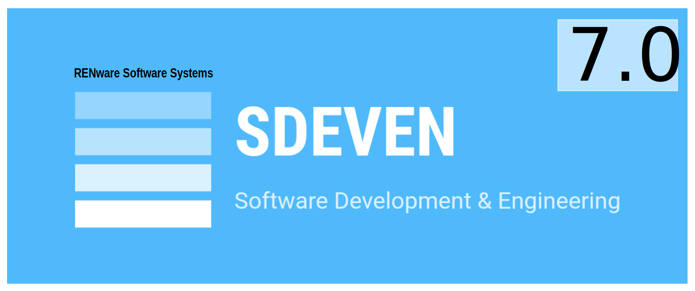

SDEVEN Cover
Previous versions: n/a
SDEVEN Software Development & Engineering Methodology
Version: 7.0.13
Last update: 230805
SDEVEN Software Development & Engineering Methodology
Table of Content
- SDEVEN Software Development & Engineering Methodology
- Overview
- SDEVEN procedures
- Administrative section SDEVEN.10-ADM
- Practices and technical issues section SDEVEN.20-RENPRA
- System Software Testing section SDEVEN.25-SYTEST
- Versioning section SDEVEN.30-RENVER
- Branches section SDEVEN.40-BRAN
- Operational Meetings section SDEVEN.45-OPME
- Change Management section SDEVEN.50-CHGMNG
- System dev logging changes / updates section SDEVEN.55-TRACE
- Release management section SDEVEN.60-RELM
- Project structure section SDEVEN.62-PSTR
- Design approaches and their review and change section SDEVEN.65-DEREV
- Code review section SDEVEN.68-COREV
- Licenses & products / models section SDEVEN.70-LIP
- Code of Conduct. Ethics, Professional and Legal Issues section SDEVEN.75-CCEP
- Conventions & principles section SDEVEN.80-COPRI
- Phases, Processes and Deliverables section SDEVEN.90-RENBLU
- Confidentiality & Classification section SDEVEN.95-COCL
- SDEVEN appendices
- Books and other reference materials
- FAQ. Frequently Asked Questions
Overview
The RENware Software Development Methodology (SDEVEN) is the basic set of rules applicable in software development process and other related processes.
Methodology itself is mandatory in the mean that is always applicable ref to software production in company, regardless to project, software type, team members or composition, project or system classification, location, etc.
The methodology is "flexible enough" to allow changes and liberty for innovation and creativity but "rigid" to practices that may be at law limits or out of law, team members cooperation and collaboration, equity, respect for anyone work and contribution, respect for intellectual property and integrity, etc. Anyone can manifest its own creativity and innovation as long as this is made known and accepted and not induce negative effects on projects and its members*.
SDEVEN procedures
SDEVEN methodology consists of and includes the following sections (procedures):
Administrative section SDEVEN.10-ADM
This section address important aspects related to administrative procedures, who is expected to do some things and how to handle them.
Practices and technical issues section SDEVEN.20-RENPRA
In this section will be found some of the most important practices and advices regarding the software development.
System Software Testing section SDEVEN.25-SYTEST
This section covers the software testing process, first as a software (ie, seen from producer perspective) and second as a system / product (ie, seen from user perspective).
Versioning section SDEVEN.30-RENVER
This section treat the git repository for software in particular how to use version codes and tags.
Branches section SDEVEN.40-BRAN
This section treat the git repository for software in particular how to use branches in order to avoid misunderstandings and to have your work as clean as possible in order to be shared and used by the other team members and colleagues.
Operational Meetings section SDEVEN.45-OPME
This procedure will treat software development production and planning meetings.
Change Management section SDEVEN.50-CHGMNG
This section is about how changes should be handled and treated.
System dev logging changes / updates section SDEVEN.55-TRACE
This section is about "in development system" tracing: issues, features, fixes, and generally speaking all TRACING & LOGGING of intentions, changes, proposals, and so on.
Release management section SDEVEN.60-RELM
This section is about the release process, how should be handled and what are the expectations regarding software.
Project structure section SDEVEN.62-PSTR
This procedure contains usual project structure.
Design approaches and their review and change section SDEVEN.65-DEREV
This procedure is about design review before being "published" as initial design or after some major | important | high impact changes.
Code review section SDEVEN.68-COREV
This procedure is about standard code review that should be done before any function, library, package, module, etc beta. The objective, regardless simply conformity, is to "see" potential generalizations and reusability portions.
Licenses & products / models section SDEVEN.70-LIP
This section is aal brief about licensing process, products, models and related concepts.
Code of Conduct. Ethics, Professional and Legal Issues section SDEVEN.75-CCEP
This section is about general conduit (general aspects) but also about ethic principles in software development.
Conventions & principles section SDEVEN.80-COPRI
This section is about terminology and "conventions culture" in order to share a common language and understanding with other team members and colleagues.
Phases, Processes and Deliverables section SDEVEN.90-RENBLU
This section describe the whole process and a delivery document is proposed.
Fundamental (basic) methodology phases
- (100-ANA) Analysis
- (800-SWD) Development
- (900-OPS) Operations
A comprehensive template as suggested structure and content can be found here.
Confidentiality & Classification section SDEVEN.95-COCL
This section is about projects confidentiality with particular aspects to software development.
SDEVEN appendices
The appendices contains mainly forms, templates, cheat sheets and other helpers. These are:
- Appendix (A) Sematic Versioning (SEMVER)
- Appendix (B) System Design Document Template (810 DSGN)
- Appendix (C) Status Report Template (STATUSR)
- Appendix (D) ROADMAP Template (RMAP)
- Appendix (E) Release note template (RELNOTE)
- Appendix (Q) Frequently Asked Questions (FAQ)
Books and other reference materials
FAQ. Frequently Asked Questions
A list with most common frequent asked questions can be found here.
SDEVEN procedures ↵
SDEVEN Software Development & Engineering Methodology
Version: 7.0.8
Release date: 230730
Administrative policies (SDEVEN.10-ADM)
Table of Content
Preamble
This section describes the organization environment and framework of software development structure.
Staffing roles and responsibilities
Testing
- funt functional tester - test the system from the functional point of view (black-box testing)
- scat external standards compliance tester / auditor - check the system declared external standards for compliance at least minimum mandatory requirements; a;so check if standard is still active, used at least as best practices and relevant for system
- isat internal standards tester / auditor - check if the system is compliant with company applicable and relevant standards
- sect security tester - check for system security according to usual practices, known / usual attacks and vulnerabilities
DevOps and systems administration
- radm repository admin - assures the project / software repository(es) are up to date, clean and can be accessed by team
- dadm dev infra admin - assure the drvelopment infrastructure / environment for a project, meaning at least: development, testing, production like, live demo machines, their installation, cloning, backup, making iso images, availability (from different locations according to needs), security issues, and so on
Project management
- prm product manager - assure the system is developed according to roadmap and company strategy; check that a version from roadmap is completely and well defined and is relevant for market and as current best practices; checks financial aspects of projects
- ptm project technical compliance tester / auditor - check if a version that is intended to be released is complete enough to be released (documentation, migration, and so on)
- pm project manager
Development and research
- dev developers - assure code, programs, scripts etc writing
- sen software engineers - assure technical organization, design, architectures, toolstacks, practices, patterns
- ban analysts - assure understanding of targeted information domains, elaborate functional testing strategy plans
- rad researchers - assure discovery and usage strategies for technical market (best) practices and patterns; elaborate methods for different technologies usage, elaborate integration strategies
- twr technical writer - write and check technical documentation
Projects and teams organization
Project aspects
A project is officially started through a management decision. This could be an informal one, but for a clear team allocation, budget, stuff nomination, etc, a written document published internally is preferred.
Basically projects can be normal / standard ones (ie, with standard classification rules) or classified with more strict rules regarding access to their information.
Other normal taxonomy establish projects as internal (for internal company use or for research) or external for those being a target beneficiary of project results.
Team aspects
Teams are dynamically allocated per projects as needed. (DYNAMIC ALLOCATION) Any member allocated a time frame on a project will follow (in that time frame) the specific project rules and organization. (STATIC ALLOCATION) Out of allocation time frame will follow the fixed / administrative pattern.
Applicable procedures
For a detailed description of project management policies refer the applicable Project Management Methodology.
Working technical environments
Working environments can be classified as:
- development - usually on personal computer, but could be situations where one or more development servers are needed especially for remote work, operating system issues, processing power, testing on more "real" machines, etc
- test (aka QA-envs) - for testing issues, regardless by which members are (to be) done
- production systems - also for testing issues but used in final stages, just before committing work to client users. These environments should be as much as possible very appropriate to a real machine that exists in current use at client
Escalation procedures and practices
From this perspective a software project should be seen like any other project. Therefore is anything special than normal procedures used in Project Management Methodology.
SDEVEN Software Development & Engineering Methodology
Version: 7.0.5
Release date: 230619
Practices (SDEVEN.20-RENPRA)
Table of Content
Preamble
This procedure contains common used practices of development work especially when using standard git systems. Objective is to assure a good level of communication, exchange information, synchronizing activities and work, presenting results and obtain best benefits.
General common and frequent aspects
Here is a list with the most common and frequent situations:
-
never change ANYTHING ref a closed version. Better is to create a new issue instead of changing the existing one.
-
organize development issues in sprints as small chunks of changes that have clear objective, specs (following Agile principle) and a short enough deadline to remain "useful & valuable" at finish
-
when work at an issue make a dedicated branch, and MAKE STRICTLY WHAT IS INTENDED, EXPECTED, REQUIRED TO DO, otherwise so it will be difficult to reverse work in case of something goes wrong and is not in issue objective. This usually will high impact the quality of result and clearly the deadline term. Respect the principle that states "when you do something, do ONLY THAT THING and do it WELL".
Branches and repository
-
always make a branch for each change / sprint, even is a short one (will allow you to quickly rollback work) - this branch should be locally on your development machine but is not mandatory, it could be remote and devops engineer should be notified
-
try to avoid mixing with other branches even if they're still yours (as work in progress)
Releases check list
Here is a check list regarding most important issues that need attention before closing a release:
-
check for still open, in progress sections; look for specific words like
wip,...(ellipses),todo,fixme,bug,need review, etc. Ignore case when search for these words ! -
check release notes: if exists as separated file or there are marked in a clear way, not mixed with things intended or in work for other versions
-
check for version code (at least major, minor, patch) to be in according with roadmap
-
check technical documentation: specs for usage, notes for developers
-
check for end user documentation: updates, references that released features are available from version x, "how to use features", etc
-
check the language used in end user intended documents to be as most as possible IMPARTIAL and avoid misinterpretations
-
check for other elements with impact on branding, such as logos, colors, fonts, etc
Technical issues regarding syncing and distributed execution
-
ref sync subject objects it is recommended to be accompany them with useful metadata at least with info ref to last sync date time stamp
-
in multi systems sync (more than 2 involved in sync process), every system should have its own list with targeted systems to be synced; this list itself is subject to sync
-
generally ref syncing it is recommended to use standard components and technologies, like
rsyncor derivate but largely enough used and maintained by producer; clearly should be avoided solutions that are available only on few systems (and in this case this should be explicitly documented) -
ref distributed execution of processes it is recommended to use already known components that have enough support as community and are dependent only of other known components, for example for queues and pub / sub systems, Rabbit MQ, Redis, AMPQ, can be used; proprietary closed systems should be avoided (can be used only in custom / dedicated / turn key systems if the beneficiary want strictly a component)
-
in file names intended for code modules / parts / chunks AVOID the character dash (
-). Replace it with underscore (_). In many languages the inclusion of the other files in code is made using some pre-processor directives (asinclude,import,require, and so on) and these directives does not always accept strings but directly filenames and often the dash character is treated as minus arithmetical operator which can lead to many "hard to detect" problems.
More information, techniques and practices can be find in template of Software Design document.
Tool stacks components versions
-
new (not enough tested in market) version of a toolstack component must be avoided, especially when is a core one for system where work is done
-
if a feature intended to be used is not backward compatible, before using or updating it must check for:
- the impact to already developed or in development code by any member
- adoption of this version in standard operating systems
Functions signature parameters
Optional chapter
This chapter makes subject of optional recommended practices
-
always make a local (in function code) copy of received parameters. This is to minimizing risk of generating unwanted side effects, except you really want to change their values and this change to be "seen" by caller
-
PAY ATTENTION that making a copy of parameters is not enough to avoid side effects; if they are
mutable(ie pointer, address) its update will alter the original value with unwanted side effect (unless is made intentionally)
SDEVEN Software Development & Engineering Methodology
Version: 7.0.13
Release date: 230806
System Software Testing (SDEVEN.25-SYTEST)
Table of Content
Preliminaries
The testing is one of the most important activity in software development as long as a piece of software is NOT written for own purposes.
Why
The testing may assure you that a piece of software do what was intended to do. This is "one face" but testing must also assure the owner of the software for the same things. And finally must assure the end users (generally the customer) for same things, sometimes more things.
When
The testing should be done first "internally" (ie, not in the presence of customer's people). Then some more complex, elaborated tests should be done in the customer presence (for customer confidence).
Vocabulary
The testing process will involve some specific terms and concepts like: compliance, bug, acceptable, workaround solution, ... These terms are not necessarily new terms but they will make more sense, will get a more clear meaning "if are seen" from testing perspective.
Test types

- -#TODO ideas ref section ref Test types:
- unit,
- functional
- integration
Test deliverables
- -#TODO ideas ref section ref Test deliverables:
- planning ==> Test Plan tmpl
- scenarios ==> Test Scenario tmpl
SDEVEN Software Development & Engineering Methodology
Version: 7.0.12
Release date: 230805
Versioning (SDEVEN.30-RENVER)
Table of Content
Preamble
This section is about versioning scheme practiced by company.
Mainly this scheme is based on semantic versioning specifications or in document Appendix A Semantic versioning (SEMVER) as appendix to this methodology.
Semantic Versioning specifications have been adapted regarding the qualification part (NO CHANGE ref major, minor and patch).
Version Structure
The structure of version string is: M.m[.p][-buildno][.qual], where version parts represents:
-
M,mandpare not explained here being exactly like accepted practices ref "Semantic versioning" -
buildnois the build number with internal applicability and uniqueness identify any build regardless of other version elements / parts -
qualis a qualifier and can be one of:alfa | beta | preview | prerelease | release; NOTE: preview is just a prerelease but just with a "more commercial" name
Defaulting version numbers
Default patch, build and release numbers will be considered latest (ie, biggest numbers) - see also semantic versioning appendix
Examples:
- 1.1.0-548.preview major 1, minor 1, patch 0, build 058, preview qualifier version
- 2.1.1-621 major 2, minor 1 patch 1, build 621, last qualifier version
- 3.7 major 3, minor 7, last patch, last build, last qualifier version
Versioning and tagging rules
The most desired situation is when tag names follow versioning principles, ie,name of tags are identically with tagged version.
To achieve this, the following rules must happen:
-
in branch
developmentalways close tags / versions with minimumbetaqualifier -
from branch
developmentDO NOT promote tags with qualifier lower thenpre-releaseto branchmaster -
in branch master always close tags / versions with minimum
pre-releasequalifier -
NEVER work directly in branches
developmentormaster- these are only for "collecting" work done in other branches -
when you have (or just need) to tag the current work (and the qualifier cannot be set at minimum requirements) then just tag an "alpha" on your branch and continue your work on the same branch or on another (depends on your context) and somebody which is admin (maintainer) will make a QA (check & quality assurance) branch from it
Versions-by-branches map
This map shows the most desired actions in frequent and current situations regarding branches and tagging.
So it is organized by branches and shows what kind of version qualifiers are recommended for each one.
Recommended qualifiers
With bolded text YES was marked the normal / usual qualifiers practiced for that kind of branch.
| Branch | release | pre-release | preview | beta | alpha |
|---|---|---|---|---|---|
| master | YES | yes | yes | ||
| development | yes | yes | YES | ||
| others (see note) | YES |
Quality assurance branches
"check & quality assurance" branches are temporary created exactly to promote a qualifier () so allow any qualifier.
SDEVEN Software Development & Engineering Methodology
Version: 7.0.5
Release date: 230620
Branches (SDEVEN.40-BRAN)
Table of Content
Preamble
This section refers the current policies regarding git repository branches.
Classification
The branches are classified like that:
-
mandatory (always required). As example is the master (or main) branch. The name master is preferred (as it is already used in automation scripts), but sometimes the name main can be found (as with best practices recommendations starting with spring of 2021 year).
-
with a long life cycle (aka just development). In this category is development branch which is required up to a minor release, then the name can be changed if needed to reflect versioning policy. Another example could be release beach intended for documentation review and finalizing and packaging of system.
-
test branches which are created usually from an alpha or beta tag and kept until the required tests are passed. This kind of branches can return (merge) back to development corresponding branch or to a release branch if tests passed for preparing a potential release. In both cases, after test finalizing and branch merge, it will be deleted.
-
developer dedicated branches local kept on remote git for a quick reference for all developers without requiring a git client
-
personal branches reflecting current work for developers that: (i) have a
gitclient installed or (ii) remote for developers using mobile devices without agitclient installed. For such as branches open on public remote1git, the name of developer and phrase "dev" or "phone" and these branches need to be requested from DevOps person in order to crete them, give them enough rights and not to be (automatically) dropped.
Branches used and their names
Usually, as not stated otherwise in a project, the following branches should be used:
-
development - consolidates development of all team. Branch is permanent and set as default
-
master - current version of system in production. Branch is permanent
-
xxx-dev - work branch for team member
xxx. Branch is temporary and should be administered by the DevOps person. This kind of branch is made to work from different devices where agitclient cannot be used and files must be individually uploaded or edit using thegitsystem web interface. The person for whom it was created can receive full rights on this branch -
qa_test / test - used according to classification. Branch is temporary*
-
release /
version_string-rel - used according to classification. Branch is temporary
master branch name
starting from 2022 new git systems are default configured to name default base branch as main instead of master. Please check to avoid mistakes due to branch name use in different automation / configuration yaml scripts.
Frequent mistakes
-
names containing "
dev" are used to signify a "local" developer work. These should not be confused withdevelopmentbranch which has already an explained purpose. They are used by people that need a repository for their current work and cannot install a local client. -
names containing "
rel" or "tst" or "qa" are intended for test purposes. This situation could appear (i) for own tests, (ii) for tests done by other people or (iii) for tests made before a release. Also, instead of making "release or test branches" when intention is for example not commit work but have a kind of snapshot with "AS IS NOW", a tag can be created and transformed latter in a branch. This method is STRONGLY RECOMMENDED for any kind of snapshots that are needed. Just pay attention with these tags and DO NOT EXPECT a long life cycle for them as anytime can be dropped by aDevOpsthat remarks they are out of used conventions and policies - a better option is just to communicate the intention.
Tagging recommendations
-
for consistency, long term and reference tags should be named using RENVER conventions
-
working tags should contain words like
devoradev(from alpha dev) if not an alpha release is intended. This will help for a right alphabetically sort, normally their preceding an alpha or upper release.
Graphic basic flow
This diagram shows the basic flow for master (main), development and one xxx-dev branch. Also on graphic the practices ref tagging are shown:
---
title: SDEVEN basic git flow
---
gitGraph
commit
branch "development"
commit id: "review and close development"
branch "personA-dev"
commit id: "work iss 001"
commit
commit
checkout "development"
branch "personX-dev"
commit id: "work to iss 002"
commit
checkout "personA-dev"
commit id: "finished iss 001" tag: "ALPHA tag for iss-001"
branch "test-QA-check"
commit
commit id: "test work for iss 001"
commit id: "passed"
checkout "development"
merge "test-QA-check" id: "get iss 001" tag: "BETA tag for iss-001"
checkout "personA-dev"
merge "development"
commit
branch "release-QA"
merge "development"
commit "...checks for release iss 001"
checkout "main"
merge "release-QA" tag: "RELEASE tag for iss-001"Names and codes used in diagram:
iss-001is an issue that needs to be closed (and coded)personA-devis a personal branch created for "person A" to work (in example for issue 001)personX-devis a personal branch created for another developer (persona X)
Also diagram shows different tags created as occasioned by "issue 001".
-
the internal
gitused by team ↩
SDEVEN Software Development & Engineering Methodology
Version: 7.0.9
Release date: 230801
Operational Meetings (SDEVEN.45-OPME)
Table of Content
Preamble
This procedure treat production and planning meetings that take place in software development process.
Agile SCRUM compliance
Procedure follow Agile SCRUM methodology recommendations for meeting types.
From this perspective the meetings has two important sessions (aka discussion panels, sections). These sessions should be clearly marked on meeting agenda, meaning should be clear from agenda level what is the principal session objective:
Of course, in each session inherently can happen things of both types, but the principal session objective should be just one of them.
The sprint event and process
Before discussing OPME meetings a brief description of sprint concept could be necessary.
The sprint term describe the process (named event in "Scrum Guide...") where ideas, things are put in practice. It is a normal software development process like any other one and has the following properties.
sprint properties
It is a fixed length event of one month or less to create consistency. A new sprint starts immediately after the conclusion of the previous sprint. All the work necessary to achieve the goals / objectives including its planning, review, execution, etc happen within sprints.
These properties determine the nature of software development approach which, by using sprints becomes an iterative and evolutionary (spiral model) one.
Type of meetings
The OPME meetings can be first classified using 2 perspectives:
- objective (
OBJcode-name3) that was shortly discussed in previously section and can be a mix but with clear sections (discussion pannels) - frequency (
FRQcode-name4) of repetition and duration (DURcode-name5) of each one
The OPME meetings are highly thought out to fit into the previous classifications WITHOUT CREATING mixes within each class or at least MINIMIZING the mixes.
OPME Meetings
The following types of meetings can be held:
- development planning (
devPLANcode-name) meeting (Agile SCRUM equivalent event: Sprint Planning) - operational schedule (
devOPERcode-name) meeting (Agile SCRUM equivalent event: Daily Scrum) - operational review (
devREVWcode-name) meeting (Agile SCRUM equivalent event: Scrum Review) - product goals review (
prodREVWcode-name) meeting (Agile SCRUM equivalent event: Scrum Retrospective)
devPLAN development planning
This meeting has goal to plan the start and execution of a sprint which will call sprintPLN in next. Also should note that a (any) sprint has a specific / principal objective (keep ONE to make sure the sprint is sprint !!!) which will be called sprintOBJ in next.
sprintPLN CONSTRAINTS
A sprintPLAN must take into account the following constraint assumptions during its execution:
- no changes will be made, especially changes that would endanger the
sprintOBJ - established quality (factors) will not decrease
- the
sprintcorresponding CHANGELOG is refined as needed - scope may be clarified and renegotiated with the Product Owner / Product Manager as more is useful but having in mind first assumption
- the
sprintPLANis the subject of ROADMAP file update
But where comes from the sprint? Well, it comes from a list with issues, usually found on ROADMAP file or a shorter list, but ROADMAP is the preferred place and this is "the way" SDEVEN recommend (see also the SDEVEN.55_TRACE procedure).
Otherwise, a sprintPLAN is absolutely similar to any other software development plan regarding an issue that has a clear and completely defined finality.
All the good practices and technical rules in software engineering, for example regarding maintainability, must be considered as in any software development plan made with maximum responsibility and care in observing the rules of software engineering.
devPLAN Properties
- principal objective: planning
- frequency: weekly
devOPER operational schedule
The purpose of the devOPER is to inspect progress toward the sprintOBJ and adapt the specifications (initial ROADMAP information) as necessary, adjusting the upcoming planned work.
The devOPER is a 15-minute to 20-minute event for the developers of the sprint execution team. To reduce complexity, it is held at the same time and place every working day of the sprint. All participants should act as developers regardless their actual position in project.
devOPER Properties
- principal objective: review
- frequency: daily
devREVW operational review
The purpose of the devREVW is to inspect the outcome of a finalized sprint and determine future adaptations. The team involved (including project manager) presents the results of their work to Product Manager (and other key stakeholders if they are participating) and progress toward the sprintOBJ is discussed.
During the meeting, the whole participating team review what was accomplished and what has changed in their environment. Based on this information, attendees collaborate on what to do next.
The ROADMAP, CHANGELOG and RELNOTE documents may also be adjusted to meet new opportunities. The devREVW is a working session and the team should avoid limiting it to a simple presentation of facts.
devREVW Properties
- principal objective: review
- frequency: minimum at 2 weeks
prodREVW product goals review
The purpose of the prodREVW is to plan ways to increase quality and effectiveness.
The Product Manager and Project Manager (and if needed anyone else from product team) inspects how the last 'sprint' went with regards to individuals, interactions, processes, tools, and their assumptions and awareness regarding "definition of Work Done and Done Well". Inspected elements often vary with the domain of work. Assumptions that led them astray are identified and their origins explored. The discusses are focused on what went well during the 'sprint', what problems was encountered, and how those problems were (or were not) solved.
prodREVW goal
The meeting goal is to identify the most helpful changes to improve its effectiveness. The most impactful improvements are addressed as soon as possible. They may even be added to the CHANGELOG and ROADMAP for the next activities.
The prodREVW concludes a sprint and its RELNOTE document. It will have a duration of maximum of three hours for a one-month sprint. For shorter sprints, the event is usually shorter.
prodREVW Properties
- principal objective: review
- frequency: monthly
Notes and abbreviations used in procedure
-
PLANdescribe a type of OPME meeting where planning is the principal objective ↩ -
REVWdescribe a type of OPME meeting where review and actual situation analysis are the principal objectives ↩ -
OBJacronym used to show the principal objective of a OPME meeting - can beREVWorPLAN↩ -
FRQacronym used to show the frequency of an OPME meeting ↩ -
DURacronym used to show the duration of an OPME meeting ↩
SDEVEN Software Development & Engineering Methodology
Version: 7.0.7
Release date: 230716
Change Management (SDEVEN.50-CHGMNG)
Table of Content
Preamble
This is about changes in software development process.
There is no specific or special procedure in software development. The process of change management from Project Management discipline must be followed of course taking into account that changes in software development are almost technical ones.
In that way, things regarding technical changes in software development are covered in other sections mostly in Practices & technical issues but not only.
SDEVEN Software Development & Engineering Methodology
Version: 7.0.10
Release date: 230804
System development and changes logging (SDEVEN.55-TRACE)
Table of Content
Preamble
This procedure is about in development system logging and trace issues, features, fixes, etc, generally speaking all "actions" like intentions, changes, proposals, and so on.
Common files used to keep tracking
The following files are mostly present in development projects:
-
CHANGELOG file - this keep record of all things done in development process - all changes or new things happened
-
ROADMAP file - this keep record of all things approved on project development roadmap (see NOTE 1: Files with commercial impact) - a template document can be found in file Appendix_D_ROADMAP_template.md
-
RELNOTE file(s) - this keep the record of things already done in a released version, RELNOTE name is an acronym for "REALEASE NOTES" (see NOTE 1: Files with commercial impact) - a template document can be found in file Appendix_E_RELNOTE_template.md
Outside of these files, projects can have some files dedicated to project management domain, the most usual files "seen by developers" being Status_report STATUSR - template in Appendix_C_Status_Report.md (see NOTE 1: Files with commercial impact).
NOTE 1: Files with commercial impact
ROADMAP, Release notes - RELNOTE, Status report - STATUSR files have DIRECT commercial visibility and impact and can be used by other persons from commercial departments so they should follow just a minimum strictness regarding used language
Taxonomy
Speaking about situations, items or events that that must be traced, these could be of category:
-
to be done category representing those things that should be made in a short term - these will be marked with
#TODOtext to be recognized by editing platforms (most of IDEs platform have extensions for that) and visually highlight them -
bugs or "problems" category representing those things that create any kind of problems and should be fixed - these will be marked with
#FIXMEtext to be recognized by editing platforms (most of IDEs platform have extensions for that) and visually highlight them -
notes or useful comments these will be marked with
#NOTEtext to be recognized by editing platforms (most of IDEs platform have extensions for that) and visually highlight them
The words can appear anywhere is considered necessary: code, comments, README files, documentation, and so on.
For all previous enumerated markers and if they are used in code ghey will be prefixed by language specific comments code, for example in Java, JavaScript or C will be prefixed with // resulting for NOTE for example: //#NOTE.
SDEVEN Software Development & Engineering Methodology
Version: 7.0.5
Release date: 230621
Release Management (SDEVEN.60-RELM)
Table of Content
Preamble
This procedure refers to releases that are made public known also as Deployments (aka kits, packages).
A RELEASE is a consequence of a successful development process and the RELEASE is the physical image of what a customer will get to install and use (also consult the SDEVEN.90 RENBLU document section 880-RLSE System Releases).
Release section in Software Design document
Release section has code 880 RLSE in Software Design document section System Release
Applicable policies
Any public release should follow these minimum requirements:
- the version number format must be strictly in accordance with Versioning scheme of SDEVEN
- must have a Release note document (
RELNOTE) - a template can be found here - the product package must be available in a standard format:
zip,tar,bz2 - the product must have been passed all requited tests: unit tests, integration tests, documentation QA, installation tests, code review tests
- the product documentation has been made available or a note with reference to a public place where is available (in release package)
- the product should have an installation procedure or a reference to it if has to be found in other place
- any known issues (as non conformities) from testing report must be placed in a dedicated section in release notes document (
RELNOTE) in section Known issues
Releases content language
All released documentation WILL GET TO FINAL CLIENTS and should conform to all rules in respect to that (especially used language).
Release directory content and structure
A 880-RLSE/ releases directory should contain the following items / sections:
880.20-ELPRI- Editions, Licenses and Pricing880.30-EUMA- End User Manuals880.30-ADMA- Administration Manuals - optional and can be used the same30-EUMA, except the situations where administration documentation is complex enough to need to be structured and placed a dedicated directory880.40-SKIT- Sales Kits880.50-TKIT- Training Kits - training programmes, schedules, books, cheat sheets, etc880.60-SRVC- Service - service procedures, manuals, technical specific diagrams, product parts and codes (aka BOMs)880.90-SCA- Source Code Archives - published releases for downloading, organized by versions
RLSE sections content source
All sections content comes from information "produced" in design and development phases.
Related procedure: SDEVEN.90 RENBLU document.
SDEVEN Software Development & Engineering Methodology
Version: 7.0.12
Release date: 230805
Project structure (SDEVEN.62-PSTR)
Table of Content
Preamble and goals
This procedure contains usual project structure and it is just a recommendation. The Project Manager will organize the project in the best possible mode in order to to be relevant in specific project situations. A common practice is to start with these recommendations and to add (or refine) elements that reflects project particular aspects.
Project basic backbone structure
First level of project backbone consists of:
- 830-DEV - here will take place all system "active" development
- 880-RLSE - here will be kept data for public releases - this directory is not be explained here, for details see procedure 60-RELM
All product system code is kept under 830-DEV directory. The objective of its structuring is to assure as much as possible code reusability and its "after-release" maintainability. This directory contains:
- <project root>/830-DEV/ directory go to section with following structure:
- doc_src/ go to section
- docs/ go to section
- pjm/ go to section
- setup/ go to section
- static_portal/ go to section
- sysInit/ go to section
- <system_module_A>/ - directory dedicated for <system module "A"> go to section
- <system_module_B>/ - directory dedicated for <system module "B"> go to section
- ... <another system module>/ ... go to section
- Commons/ go to section
Each of these directories will be explained in next sections.
Naming conventions
To avoid conflicts and misinterpretations at programming language level it is recommended that in FILES and DIRECTORY NAMES to avoid characters space () and (-) and to replace them with underscores (_).
For a clear "picture" please refer the "Example of project full directory structure" section.
doc_src directory
- the technical documentation:
- 110-SRE System Requirements
- 120-CPTS System Concepts
- 130-SKIT Sales Kit(s)
- 810-DSGN System Design
- system manuals
- euma
- adma
system manuals
system manuals (adma & euma) will be assembled as deliverables in release packages for details see 60-RELM procedure
docs directory
This directory will accommodate the FINAL (RELEASED) documentation static portal that accompanies the developed system. This is part of what is known as "Help Center" of that system This is mandatory for products from category "ENTERPRISE SYSTEMS".
remarks
- this directory content is obtained from
static_portaldirectory after tests passed and as preparation for a release (here go to static_portal directory section) - this directory is subject to git repository as is part of a release
pjm directory
Here are kept project management items that could be necessary in software development 1, things like that:
- project contract
- project tests & acceptances procedures
- deliveries content and schedule
- ... etc
project management documents
the project management documents make subject of Project Management discipline and will not be explained here or in other SDEVEN section
setup directory
The aim of this directory is to keep code to install the system by this understanding the code that:
-
create all directory structure required to accommodate and run developed system
-
create all OS level users, groups or other administrative OS "items"
-
install all required OS level dependencies and applications (for example a local particular database system, a system application used to manage the network components, etc)
-
install the framework(s) components that are required to run developed system (for example JRE for Java components, PHP Laravel, Python Flask, etc)
-
configure OS installed components in corresponding directories (for example on Linux some changes in directories
/etc,/var, etc)
setup components language
A general practice is to make setup components in usual OS scripting language (Bash, Power Shell, etc) but is not mandatory to do like that. A good practice is to use a language that:
- can assure enough independence of OS specific commands and "formats" (for example the directory separation character,
\vs/) - can be executed on all known public OS-es (Linux, MacOS, Windows)
- one of the "perfect" candidates is Python 3
static_portal directory
This directory will accommodate the documentation static portal that accompanies the developed system. This is part of what is known as "Help Center" of that system This is mandatory for products from category "ENTERPRISE SYSTEMS".
how to create documentation static portal
- the company practice is to use mkdocs to build this portal
- this directory is used for testing and validation resulted portal - released portal is kept in
docs/directory
sysInit directory
The sysInit directory accommodates code that initialize all system modules. This system initialization routine SHOULD BE THE CENTRALIZED ONE meaning:
- each system module / component must have its initialization code (as described in "system module X")
- the
sysInitcode centralize all modules initialization in correct order
The code of sysInit module should be called repeatedly without generate side effects except that determine system initialization and loosing all sessions in work data. But repeating calls should all system data is correctly flushed and persisted and no UNEXPECTED missing (of course others that "unsaved data") or other files, configurations damage is happening.
<system_module_X> directory
The system must be designed following the next principles:
- must be structured in "independent modules" (see the next explanation)
- modules should interact between them ONLY:
- using parameters and returns
- using defined interfaces (as recommended in OOP guides)
- using a external shared - common - data component
- interactions or communication between modules that require global variables should use the Commons component (see Common section)
- should have their own initialization code callable from
sysInit - should have their own
README_moduleX.mdfile containing specific technical specs and info (will become technical documentation)
What means an independent module?
A software module can be considered independent enough when it can be "transformed" into a distinct library with an acceptable work around effort meaning without change or alter its functional code but only the required code to make it separated "package or library" (ie, the code that define its library definition)
Commons component
This component is a specialized module used to replace direct usage of global variables. It usually is implemented as a class object and take care of global variables by meaning:
- assure their consistency such as they are critical regions
- prevent circular references when using them (everybody import only
Commonsmodule)
Commons component (if is present) should have data initialized by each module that post any global data and in sysInit module should be among the first created, if not the very first.
Commons component code-name
The Commons component has the name starting with uppercase especially to avoid confusions with commons name which can be used in more other contexts being an usual and general term. So, the idea is to use in clear Commons instead of commons and to potentially get some warnings at least in stating / initializing phases...
<project_root>/830-DEV/ directory
In the project root directory will be at least these files:
README.mdwhich contains a kind of product data sheet with project informationproject.tomlwhich contains project information like:- name - product / system / project code-name / short-name as known in organization
- description a short description of the project (just emphasizes the essence or "reason to ve" of product because more detailed information is offered through README)
- version is the product version (the product in that package !) and must conform all SDEVEN versioning specifications
- license type
- ... more information, usually this file being also required by PACKAGING AND DEPENDENCY MANAGEMENT used solution ...
requirements.txtwhich contain product / system internal and libraries dependencies (just system level not OS level)
Example of project full directory structure
Here is shown an example of project directory structure starting from a PROJECT-ROOT-DIRECTORY.
📁 <PROJECT-ROOT-DIRECTORY>
├── 📁 830-DEV/
│ ├── 📁 doc_src/
│ │ ├── 📁 110-SRE/
│ │ ├── 📁 120-CPTS/
│ │ ├── 📁 130-SKIT/
│ │ ├── 📁 810-DSGN/
│ │ └── 📄 other_project_docs...
│ ├── 📁 docs/
│ ├── 📁 pjm/ # organization specific project management and contractual docs ...
│ ├── 📁 setup/
│ ├── 📁 static_portal/
│ ├── 📁 <sys_module_A...dir>/
│ ├── 📁 <sys_module_B...dir>/
│ ├── 📁 <sys_module_X...dir>/
│ ├── 📁 Commons/
│ ├── 📁 SysInit/
│ ├── 📄 project.toml
│ ├── 📄 README.md
│ └── 📄 requirements.txt
└── 📁 880-RLSE/ # specific organization (see procedure 60-RELM) ...
-
The reason that project management documents are kept "in development repository" is to be available for the whole team. This is not mandatory and in special cases this directory can be moved out of development repository. ↩
SDEVEN Software Development & Engineering Methodology
Version: 7.0.5
Release date: 230626
Design approaches and their review and change (SDEVEN.65-DEREV)
Table of Content
Preliminaries
This SDEVEN section presents some common design approaches (also used as review objective) practiced in company. The existing software engineering theory behind these approach is supposed to be known and understood by team members with role in software engineering (sen role explained in "Administrative policies (SDEVEN.10-ADM)" section "Development and research").
Review process and design approach
The review process is strongly correlated with design approach followed by project. This allows allows compliance with standards to be verified and to make "good, reliable and usable" recommendations after a code review.
Audience
Targeted audience is:
- designers, architects - to practice the ideas and guidelines of here
- software engineers, technical leaders, product managers - to understand the design issues and impact on development
Introductory and Approach Models
In SDEVEN there are 2 (two) kind of classic and traditional paradigms used for software development:
- waterfall paradigm (aka sequencing) - design is a step that must be finished before development
- incremental paradigm (aka evolutionary) - design and development are made continuously, in small steps with returns from one to the other step
SDEVEN approach
Both paradigms are "good" and have their "pros and cons" for each project depending of its context. For that reason, SDEVEN methodology combine both approaches and apply Agile principles seeking to obtain best results by doing that.
Basics of SDEVEN approach
As already said, in SDEVEN both paradigms are used and combined, and when make a mix of them inherently a predominant one will result. This predominant one is mainly dependent of nature of product and intended features to be developed.
The Product Manager is responsible to decide what approach to be used in a particular situation. Here are listed the basic and minimum recommendations:
- if a waterfall approach is decided, then a
majorandminorversion numbers should be considered ALWAYS and NOT only a patch version or just a build - an incremental approach can cause version numbers to be updated in an "out-of-order way" but this thing must be managed accordingly to remain relevant and consistent
Agile methods
As Agile approach, the following methods are recommended to be used:
- SCRUM
- Extreme Programming (XP)
- Dynamic Software Development Method (DSDM)
- Feature Driven Development (FDD)
Type of design changes in SDEVEN approach
The following type of design changes must be considered related to Design Review process:
-
MA design change - this is considered a MAJOR change and it is happening when a completely new feature needs to be implemented, by "completely new" meaning there is no background relative to that feature. A full analysis should be made and some related supplementary research could be needed. And all of these can generate collateral unexpected problems, even a design takes place.
-
CR design changes - these changes appear as usually customers want some features but "staying in product scope / universe" (attn, in product scope does not necessarily mean in contract scope)
-
WIS design changes - these are kind of changes, out of project scope and they could present some important features regardless they comes as customer request or an internal idea; the experience to approach these changes exists but should be placed on product ROADMAP
Applying customer changes
Customer changes are normally changes that does not update the product version, but are STRICT LOCALLY for that implementation. The decision to generalize and apply them TO PUBLIC PRODUCT RELEASE is at product management level.
SDEVEN Software Development & Engineering Methodology
Version: 7.0.6
Release date: 230626
Code Review (SDEVEN.68-COREV)
Table of Content
Preamble and objectives
This section is about code review. The main objectives of a code review are:
- Sharing knowledge
- Sharing responsibility
- Improving code structure
- Learning
A good and effective code review will cover all those aspects.
Technical objectives and the process
-
The main purpose is to "detect" those code parts that can be generalized and reused
-
Another purpose is to check the conformity to appropriate standards and practices (for example for a
Pythoncode to check if it respectsPEPindications, or for a web server front end application ifHTMLspecifications was followed, for a script ifECMAScriptspecification are followed, etc). This conformity is expected to keep at an ACCEPTABLE level, meaning at least fundamental principles.
Who to execute code review?
A code review MUST be done by EXPERT level members, both by a developer and a software engineer. This will maximize the process results and can give best information regarding code generalization and reusability.
Mob technique as code review technique
Mob technique as code review technique
SDEVEN recommends Mob technique ONLY for learning process when:
- junior members are used in coding process or
- when adopt a new standard, language, generally speaking a new "thing" and the knowledge should be transferred to some people
Mob programming means that all required team members are present in the same time in front of one screen. Or work remotely on a shared screen — that is my case.
First (the team or its leader) decide for a task (or issue treated as next action), and when possible we rotate in driving sessions. A session means there is a one driver — one who types / clicks, and one navigator — which tells the driver what to do. The other team members keeps attention, and only when the navigator goes in a wrong direction, then interrupts*. Navigator navigates for 3 (max 5) minutes and then rotate.
Rotation means that driver now navigates — should know next step, navigator takes a rest, and others of the drives but less than half of them. And after 3 minutes another rotation, and again, …
This rotation style is intense. You have to keep attention all the time, otherwise you’ll have to navigate in couple of minutes, and you’ll have no idea how to navigate (by you is meant the team leader).To stay in shape we do regular breaks for bathroom / coffee, and of course a long break for a lunch. Goals of code view are fulfilled
Sharing knowledge is instant — every team member follows the mental process, and knows why was what done. Sharing responsibility in my opinion full — I take responsibility for everything that we produce as I can anytime say “I disagree” or “I have a better idea”. Code structure is agreed by all team members, therefore is consistent and the best team members can do. Learning… is again instant, and intense. If the navigator is good, they’ll not only call what to do, but also how to do it efficiently. I learn daily better software architecture, better testing strategies, how to use IDE efficiently, … just because navigators know (and share) pieces I’m missing.
SDEVEN Software Development & Engineering Methodology
Version: 7.0.6
Release date: 230626
Licenses and Products (SDEVEN.70-LIP)
Table of Content
Preamble
This section refers to software licenses and products, how are used and what are good for.
Procedure present what kind of licenses are practiced and generally how a software system becomes a product (or when can be considered product).
This procedure is not mandatory for software development process itself but gives an idea about "what will happen with product for which I did write code". The licensing problem is a commercial and legal one. Its just "for your information", just because many people want to know what becomes their work, and because sometimes is good to know why some decisions are made and wht is the rationality behind them.
Software licenses universe
A software license, without any other clause, is about the legal(ity) and right(s) to use the respective product / system.
Generally speaking, you can download, copy, install, remove, etc the system, free and in most cases without any payment required. All legal.
But there are two things that are not always free and MUST BE ESTABLISHED BY LICENSE:
-
A FUNDAMENTAL FACT: The one you are not the proprietary of code, you cannot treat it as its your own property, but you can use it JUST for your own and IN YOUR NAME, make safety copies, backup it, restore it, and
-
You cannot use it without permission (from legal point of view), EVEN THEN SYSTEM DOES NOT ENFORCE ANY RESTRICTION
Software licenses
There are 3 kind of license models (types) used by company for software products:
-
open licenses - these are free (there is no cost to pay for them); for these licenses the company still preserve the intellectual property and copyright, just offer for free the rights of use; any other services are not necessarily and default covered by this license, but if you how to do it, you're free to download the software, install and use it without any obligations; however, you cannot sale / resale the system /product as it would be your own property
-
turn key licenses - these are systems / products made especially for a customer, eventually paid by him and the intellectual property is transferred to the customer; so, after finishing the system, company has no right to sell / resell or use the code or parts of code AS IT WAS TRANSFERRED; however, in most cases, two "evidence" read only CD are made with the code for which the intellectual property is transferred
-
commercial licenses - these are strictly with payment for usage; quantification of payment is / can be made in various forms, for example number of users, number of computers, number of processors, quantity of memory, and so on; in most cases, the software restrict usage by "forcing" in a way these quantities, of course first thing being the software ability to "count" for them
Of course there are many other taxonomies but these are relevant for software development as activity, the others being useful for other domains like product management or legal / lawyers structures.
IMPORTANT notice: If not otherwise specified, open licenses should be accompanied with text: "This software is a copyright of company Systems (REN CONSULTING SOFT ACTIVITY SRL).". Text should be put at start of license content as to not alter its original text which is usually published and can be referred AS IS.
System vs Product
For a software there are 3 major "end of cycle": to become a product, to become a system or both.
As system, a software should have an installation procedure, which could be just a documentation or other automation software. This procedure should be clear, well defined (ie, deterministic, without ambiguities) and repeatable.
As product must have an usage documentation (ie, day by day), an administration documentation (ie, installation, configuration, maintenance), a packaging procedure.
These are from manufacturing point of view, other processes requiring any other issues, for example in marketing a logo would bw required for a product, etc.
This methodology assures that the essential parts of both taxonomies will be covered, at least in raw forms creating the base for future / next refinement levels.
Software products / models
From this point of view relevant taxonomies are:
- by completeness
- by code level
By completeness taxonomy
-
full standalone - products that contains everything to assure a complete functionality (aka full stack products, or in jargon "with batteries included", all in one, etc)
-
modules - products that assure a single functionality usually useless only itself, but normally used in a large context, combined with other modules; examples: a database JSON transformer, a caching system, a queuing systems, etc
-
frameworks - products aimed to be used as foundation to build other products over it; examples: python Flask, company CORE, etc
-
interfaces - products aimed to "stay in front" of other systems / products and therefore assuring different kind of protection, translation, etc; often known as middleware products; examples: data APIs, proxies, guards, data translators, SQL Alchemy, etc
By code level taxonomy
-
low level / infrastructure - these are systems that address low level operations, with intensive (ie, directly coded) use of operating system directives; examples: print utilities, file system watchers, system monitors, serializer, de-serializer, en(de)coders, etc
-
mid and high level - these are systems that do not address directly operating system directives (just in rare cases for usual file operation), usually addressed to business or just to assets inventory (infrastructure systems for example); examples: ERPs, invoice makers, etc
-
UI / meta - these are systems that assure some features for user interface (operations) by using different flavours of (tagging) languages specific to a device (for example VT100 terminals), to a software (for example HTML for browsers); sometimes these systems use "real" languages with empowerment of complex programming languages (for example JavaScript) or just simple "stylers" to assure a better readability (CSS is a good example, Markdown and PostScript are others, etc)
SDEVEN Software Development & Engineering Methodology
Version: 7.0.6
Release date: 230712
Code of Conduct. Ethics, Professional and Legal Issues (SDEVEN.75-CCEP)
Table of Content
Preliminaries
The code of ethics and professional conduct outlines the principles that govern decisions and behavior at a company or organization. They give general outlines of how employees should behave, as well as specific guidance for handling issues like harassment, safety, and conflicts of interest.
A. Ethic Code
A code of ethics is broad, giving employees or members a general idea of what types of behavior and decisions are acceptable and encouraged at a business or organization. A code of conduct is more focused. It defines how employees or members should act in specific situations.
A1. Be inclusive
We welcome and support people of all backgrounds and identities. This includes, but is not limited to members of any sexual orientation, gender identity and expression, race, ethnicity, culture, national origin, social and economic class, educational level, color, immigration status, sex, age, size, family status, political belief, religion, and mental and physical ability.
A2. Be considerate
We all depend on each other to produce the best work we can as a company. Your decisions will affect clients and colleagues, and you should take those consequences into account when making decisions.
A3. Be respectful
We won't all agree all the time, but disagreement is no excuse for disrespectful behavior. We will all experience frustration from time to time, but we cannot allow that frustration become personal attacks. An environment where people feel uncomfortable or threatened is not a productive or creative one.
A4. Choose your words carefully
Always conduct yourself professionally. Be kind to others. Do not insult or put down others. Harassment and exclusionary behavior aren't acceptable. This includes, but is not limited to:
- Threats of violence.
- Insubordination.
- Discriminatory jokes and language.
- Sharing sexually explicit or violent material via electronic devices or other means.
- Personal insults, especially those using racist or sexist terms.
- Unwelcome sexual attention.
- Advocating for, or encouraging, any of the above behavior.
A5. Don't harass
In general, if someone asks you to stop something, then stop. When we disagree, try to understand why. Differences of opinion and disagreements are mostly unavoidable. What is important is that we resolve disagreements and differing views constructively.
A6. Make differences into strengths
We can find strength in diversity. Different people have different perspectives on issues, and that can be valuable for solving problems or generating new ideas. Being unable to understand why someone holds a viewpoint doesn’t mean that they’re wrong. Don’t forget that we all make mistakes, and blaming each other doesn’t get us anywhere.
Instead, focus on resolving issues and learning from mistakes.
B. Professional Code
A professional code address those issues related strictly to work environment and derives from necessity of a good, human reasonable, effective, efficient and pleasant working in / with teams.
B1. Work environment
Employees should act with integrity, comply with laws, maintain a professional work environment and comply with company policies. They should treat customers, colleagues, and partners ethically at all times.
B2. Conflicts of interest
A company's reputation depends on the actions and integrity of its employees. It is essential that they avoid relationships and activities that hurt, or appears to hurt, their ability to make objective and fair decisions.
B3. Protecting company assets
Employees should always act to protect company assets, including physical, intellectual, and electronic or digital properties.
B4. Anti-bribery and corruption
A company's integrity is essential for maintaining trustworthiness and reputation. Employees should always do their work fairly, honestly, and legally.
B5. Attendance and punctuality
Employees are expected to be regular and punctual in attendance. This means being in the office, ready to work, at starting time each day. Absenteeism and tardiness burden other employees and the company.
B6. Absence without notice
Employees who are unable to work due to illness or an accident should notify their supervisor. This allows the company to arrange for coverage of their duties and helps others continue to work in their absence. If an employee does a report for work and the company is not notified of an employee's status for 3 days, it is typically considered a job abandonment.
B7. General harassment and sexual harassment
This company is committed to providing a work environment free of discrimination and unlawful harassment. Actions, words, jokes, or comments based on an individual’s sex, race, ethnicity, age, religion, or any other legally protected characteristic are not tolerated.
B8. Cell phone use at work
Personal cell phone usage during work hours is discouraged, except in extreme cases such as an emergency.
B9. Dress code
A professional appearance is important when employees work with customers or potential customers. Employees should be well-groomed and dressed appropriately for the business and for their position.
B10. Substance abuse
The manufacture, distribution, possession, sale, or purchase of controlled substances of abuse on company property is prohibited. Being under the influence of illegal drugs, alcohol, or substances of abuse on company property is prohibited. Working while under the influence of prescription drugs that impair performance is prohibited.
B11. Tobacco products
The use of tobacco products on company property, outside of permitted areas, is specifically prohibited.
B12. Internet use at work
Employees may use the Internet when appropriate to access information needed to conduct a business company business. Use of the Internet must not disrupt or injure the company computer network. Use of the Internet must not interfere with an employee's productivity.
C. Legal issues
Legal issues refer to those aspects where a software product / system interfere with legal aspects. From developer point of view these are very much related to personal information regarding end users of system and their potential comfortably related to personal data of confidential nature.
Other legal aspects are subject of a specialised department of company.
C1. Potential confidential data
- identification official codes, by official meaning they are subject of any personal official document
- personal adress of residence
- personal phone number
- personal email
- any personal banking information
- passwords and user names / id-s
- name of family members
- other sensitive and personal data, like incomes, revenues, expenses, religious data, color (skin, hair, etc), dressing, etc
C2. How to avoid potential problems
First of all it is important to keep in mind that for violating some legal issues, THERE IS NO EXCUSE FOR DID IT, even if the reason was a good intention... The law is applicable as is. So DO NOT SUPPOSE ANYTHING, and better is to ask if you're not sure and ready to assume all consequences.
So, here you'll find some simple rules:
- do not write any out of specifications code, ie, "hidden code"
- do not collect any personal data (see previous section) without user consent
- store any personal data using different encryption mechanisms; if not specified in system design then use hashing
References
SDEVEN Software Development & Engineering Methodology
Version: 7.0.6
Release date: 230715
Conventions & Principles (SDEVEN.80-COPRI)
Table of Content
Preliminaries
This section is about terminology and naming standards and conventions used in development process and code.
The company try to keep aligned to international practiced and most used terms & conventions and adopts standard changes "on the fly" as soon as possible.
Is necessary that people that are working in software structures (departments) of company to keep aligned with terms and conventions in order to have A COMMON LANGUAGE AND UNDERSTANDING ABOUT THINGS.
The idea is that when is needed to write things that will be used by someone else in the other process steps or in the future after a while (ie, there are more that one people involved), it is important that shared things to be recognized at destination as they was thought at origin by those team that produced them.
Files
- files whose names start with
xxx(case is not important) are (and will be) considered marked for a future deletion or discontinuing'
why don't delete them directly
- this method allows to "remember" to delete them latter but to still keep the information available a while to assure an acceptable and as smooth change management (and to give time for a possible return to the previous situation)
- also when view list of files in alphabetically order, these files appear grouped near the end (or beginning)
-
files whose names start with
_WIPorWIP(normally case doesn't matter but should be a sign to pay more attention) are known (announced) as being in work and not in a stable state, so they should be treated more carefully when need to use them -
any other "traditional" conventions should be respected and treated in consequence; the most of them comes from
Linuxsystems, for example files beginning with dot (.) are hidden (for normal users), backup files have extension.bck, files with extension.tmpare temporary and subject to be deleted (by users or operating system) without notice, and so on -
the characters
-(dash) and(space) will be avoided as much as possible in file names (ie, in different programs should be source of errors by confusing with arithmetic minus operator) and replaced with_(underscore); if this is not possible, A WARNING must be stated inside the file content or in a respetive component README file
Calendar dates
These should respect the convention as they will be written as YYYYMMDD or YYMMDD, because by doing so will assure a right ordering "by date" in about all situations (just by using the operating system standard sorting procedures and not requiring some special order methods); the year could be only from 2 characters if there is no doubt regarding the year (the standard conventions stated by SQL ANSI are very clear and self explanatory)
Datastores
The preferred datastore for code is the repository.
On the other hand, there are cases when other type of stores are required. Generally these stores are required in development process (stores for other processes are not subject if this methodology) and specific to project. They can be permanent (as stores where kits resides or stores for sales materials) or temporary allocated for project.
In any cases the dev infrastructure admin should be contacted.
Normally these stores will be allocated from file server pools, which means that will act as "simple shared drives" (without any notice). If there are some other protocols required, such as access by http, https, rsync and so on, these issues must be notified.
Also you should always expect that for such stores there are some limitations such as maximum capacity allowed, number of files, lifetime of files, file foemats allowed, etc. If this could be issues or you concern about them, please ASK and do not make other assumptions.
"In code" names & identifiers
These issues should follow the programming language standards (as PEP for Python) or best practices in case there are no stated standards. A linter and / or code formatter should be used like Blake for Python, but better is to ASK the team leader or project technical manager and NOT TO USE your own standards by supposing they are good and should be used (if this is the case, please discuss this with technical stuff before putting it in practice).
Some of recommended practices in any cases are:
-
always mark protected or private attributes with underscore character in front of their names, regardless the programming language used
-
always comment the code; as frequently as better; do not worry about readability or other concerns; somebody will take care to ask for cleaning if seems to be too much "spam"
-
use UPPER CASE for identifiers used or intended to use as constants
-
comment the functions or class methods with a large comment block and specify at least: a description of max 2 lines, the argument types and what are good for, the returns type and when is happening
SDEVEN Software Development & Engineering Methodology
Version: 7.0.8
Release date: 230730
Blueprint. Processes & Deliverables (SDEVEN.90-RENBLU)
Table of Content
Preamble
This section is about whole methodology phases, processes, steps, their codes, all over a cheat sheet / blueprint of "the whole".
The phases are important as codes (on documents for example) and as name and content for a better understanding of process. They can also be used (and this is recommended) as directory / file names for a common understanding (at least 830-DEV and 880-RLSE) but when use them in file system (file or directory names) is important to pay attention to case (lower ase is accepted) and the character - (dash) and space (underscore _ is accepted).
This methodology, being applicable to all software development projects, not all sections are applicable in all cases, so in design template document - md will be CLEAR specified for each section if it is REQUIRED or OPTIONAL.
Blueprint / typologies
Basically the RENware SDEVEN) (aka SDEVEN) methodology name is an acronym of Software Development & ENgineering and is adapted to company practices, software styles, types of software in portfolio and scope and follows a classic waterfall inspired pattern but which can (and is) be used as an evolutionary model with sprints inspired from Agile methodology.
There are classic phases up to release a product followed by maintenance and current operations phases post release. After a release, the methodology allows returns to any of the first 6 phases for new features / versions releases, the MAIN OBJECTIVE being a higher coherency, traceability and ability to move project from a team to another team with minimum overheard due to project adoption.
In this document processes deliverables are summary described keeping a level that facilitate the understanding of principles of methodology. For more details is recommended to consult the appendix referred (see references section).
Roles & responsibilities
For each "final" (ie, leaf) process, the basic required roles was specified. Roles are abbreviated as described in 10.ADM section. Also a super generic role was used in places where more and different specific roles should be used depending on project context, size and complexity.
Phase 100-ANA Analysis
This phase is the stage where the system requirements are collected and processed (engineered) to a more structured form in order to be more usable in system / product elaboration process.
Traditionally the phase start from system requirements which are (re)structured in primary designs (aka high level design) at a level which allows for system blueprint, objectives, structure and functions.
Also, here are produced the sales kits which will be used by marketing and sales structures in their work to market and sale the system / product.
110-SRE System Requirements
These are the requirements as collected (elicitation) and categorized by relevant taxonomies. As mandatory taxonomies are:
- functional types: functional, implementation issues, performance issues, user interaction issues, interfacing issues, standards compliance
- urgency and importance types following MoSCoW paradigm - must, should, could, would
Roles & Responsibilities
- REQUIRED: ban
- RECOMMENDED: rad, twr
- OPTIONAL: sen
120-CPTS System Concepts
This is what is called usually High Level Design but it means more than it. This deliverable should contain the following:
- the basic system concepts as business specific terminology
- a high level architecture indicating at least the basic functional components of the system (logical architecture)
- the system universe as other business components which interact with the system and very shortly what kind of information is exchanged in interaction process
- what are the applicable standards and why are they important
- what are the main security issues and how can be avoided
- types / models of user interfaces intended to be implemented
- which logical components are back ends, front ends, communication, interfaces
Roles & Responsibilities
- REQUIRED: ban, sen
- RECOMMENDED: rad, twr
- OPTIONAL: prm
130-SKIT Sales Kit(s)
The "things" required to sales structures should be put under this code, eventually with detailed documents and codes following a class notation (with dot character). The most common things are:
- a system blueprint that can be used in presentations
- a system logical architecture that can be used in presentations
- some key differentiators that can be used in offers and bids
- various pro/con-s analysis ref other market similar products
- a list of system requirements that it satisfy (and usual responses) usable in bidding process
- a list of system standards that it is complaint to (and usual responses) usable in bidding process
- some known "frequently asked questions" and the answers to them
None of these represent new information. All information os to be found in the other documents just it is (re)structured in other way in which is more useful to sales personnel.
Roles & Responsibilities
- REQUIRED: sen, prm
- RECOMMENDED: twr
- OPTIONAL: pm, sect
190-SKTD Sketches & Technical Diagrams
These are different drawings of system parts. They are (should be) separated because can be useful (as raw images) in other places / processes such as presentations, UI design, branding, etc.
Phase 800-SWD Software Development
This phase covers the software realization process but from an engineering point of view, meaning not only code and programs writing, but also the design, testing and release processes, Aim is to make a SYSTEM PRODUCT, usable and maintainable both by the beneficiary and RENware as the producer. Another important issue is related to capability of the system to be "migrated" to other team members with as less overhead effort as possible.
810-DSGN System Design
This is the main technical detailed document of the system. It is the starting point for any developer that join the project snd its job require to understand the system.
Roles & Responsibilities
- REQUIRED: sen
- RECOMMENDED: twr, sect
- OPTIONAL: prm, ptm
820-SYINT System Internals
This is nothing else that low level design too, but is seen as a dedicated chapter or appendix of 810-DSGN and refers technical documents (that often are read singularly, for example a dev needs to review only some states of an object) such as system states, sequence diagrams, etc, documents that by default are classified and should not get out of project without special approvals.
Roles & Responsibilities
- REQUIRED: sen
- RECOMMENDED: twr, ptm
- OPTIONAL: dev, ban
830-DEV System Development
This "contains / is" the system as it is on repository system. Practical is the local repository image. It clearly contains all things / codes / programs / scripts needed for system to work, bur it can contain (and it is strongly recommended) the system other documentation being it technical or end user manuals.
The only thing that must be said is regarding documentation. Therefore the technical one must be in text formats (markdown is preferred) and other documents should be also in text format as much as possible. Binary formats should be strongly avoided (are not "diff-able") but in "no other option" cases, the repository administrator must be informed about binary files to action in consequence. As other suggested options to binary documents would be:
- use markdown extensions like
mermaidfor "graphical" things / diagrams, - store them as xml format,
- store them as pdf format,
- use "open text formats", etc.
Roles & Responsibilities
- all kind of required
dev - sometimes would be necessary
ptmfor different clarifications
840-TEST System Testing
The things that are mandatory here are:
- a testing plan: what to test (REQUIRED), when to tets, by who
- test cases - that represent for each test required:
- the exact expected steps to be done with a number / code to be easily referred in other places
- the expected result to be obtained by doing previous steps (often is useful to indicated an acceptable tolerance, especially when are talking about numbers or times)
- the system reported messages (if there are) and results, preferably with associated print screens
- a testing report that summarize the results of testing process: number of severe / critical bugs, number of acceptable errors (as solvable by work around), recommendations to improve, documentation non conformities, time spent for testing, automation tools used, required and recommended.
Roles & Responsibilities
- REQUIRED: func, scat, sect
- RECOMMENDED: twr,ptm
- OPTIONAL: isat
880-RLSE System Releases
This refers to releasing process regardless of released version qualifier (not only to release versions) but to any kind of version being it an alpha or a beta or a previewer, etc.
Any release should pass a test process which is done by developer itself as first test (alpha test). No promote to higher version qualifiers is allowed if alpha tests did not pass or was bypassed (skipped).
After alpha test can be created a branch for testers team or a tag (that will be used latter for a test branch creation).
Any tag will be kept at least for minimum 4 tags after it but no more than 20 tags after. These min and max can be modified if project require other limits.
Tags will be saved also on an external backup (in project history).
Releasing a version must be documented accordingly in project CHANGELOG and if project require, a release note should be issued. Both must be written with enough care to text explanations and having in mind that will be used latter by other persons in writing different product documents and marketing materials.
Roles & Responsibilities
- REQUIRED: isat, scat, sect
- RECOMMENDED: prm, ptm, twr
- OPTIONAL: pm, dev
890-MNT System Maintenance
This phase is about:
- Maintenance Plan
- Hot Fixes
- Critical Patches
- Other Updates
all of these mainly in relation with "beneficiary" os system / product / application.
Roles & Responsibilities
- REQUIRED: sen, ptm
- RECOMMENDED: sect, twr
- OPTIONAL: pm, dadm
Phase 900-OPS Operations
This phase is about maintaining the system after a release. In fact is about maintaining a release.
Few words about software maintenance
The maintenance is probably the hard thing about a software. Software maintainability is the most important issue for any software company that develop its own software as portfolio product.
Along decades there was more and more improvements in software development process, probably the biggest step being made when software development was considered an ENGINEERING discipline with all things that engineering means. But the biggest issue remained the measurement process.
From maintenance point of view a released version must be kept "alive" a period of time. That alive is mostly generated by the fact that software being an intangible product, so hard to measure, always could be some astigmatic functionalities, ie non conform ones, aka bugs, that should be remediate after release. Different methods to categorize and measure these non conformities was developed in time. Now the most accepted "definition" for a "bug" is: a(ny) thing that works otherwise that is written in product documentation.
910-MNT System Maintenance
These are current operations related to modifications /changes that must be made to a released version.
The important things are:
- to maintain an acceptable coherence during modifications in order to avoid side effects
- to make changes in a way to not be repeated after some time, ie to not make / solve the same issue more than once in time!
- to present an interface to users that is able to collect and centralize issues (aka support line / center)
Roles & Responsibilities
- REQUIRED: dadm, radm, ptm
- RECOMMENDED: sect, twr
- OPTIONAL: pm, prm
920-TLE Prepare temporary live environments
This activity refers to dev infrastructure administration and in fact, from software development methodology point of view means that who requested for this environment should create a kind of checklist with requirements in order to be easily verified by administrator.
Roles & Responsibilities
- REQUIRED: dadm
- RECOMMENDED: ptm
- OPTIONAL: dev
990-PMSP Project Management Support (REQUIRED)
This activity refers to technical support activities required in Project Management, ie estimations, deliveries breakdown and quality factors in PoC calculation, etc.
Roles & Responsibilities
- REQUIRED: sen, prm
- RECOMMENDED: ptm, pm
- OPTIONAL: ban
References
A comprehensive template as suggested structure and content can be found here - format md.
SDEVEN Software Development & Engineering Methodology
Version: 7.0.9
Release date: 230730
Confidentiality and Classification (SDEVEN.95-COCL)
Table of Content
Preamble
This section is about projects confidentiality with particular aspects to software development.
Overview of classification in RENware company
In RENware company, classification follows the "standard" practices, just applied in almost all of cases to projects level (there could be exceptions but these are announced specially). So, the are the following levels:
- UNCLASSIFIED projects - these are public projects; they are not marked
- STANDARD projects - these are the most projects and classification applies IN PROJECT SCOPE; they are marked as
RESTRICTED. ONLY FOR PROJECT INTERNAL USE - CONFIDENTIAL projects (aka TOP projects) - these are usually company internal projects, such as research projects; they are marked as
CONFIDENTIAL. ONLY FOR PROJECT INTERNAL USE - STRICT CONFIDENTIAL projects - these are projects
reservedorONLY RENware top management
Software development perspective
Ref to this point of view, ALL PROJECTS THAT BELONGS IN A WAY TO SOFTWARE DEVELOPMENT (ie, specific as software development or just have parts which involves software development) are as default at STANDARD level of classification. This means that for these projects, even if they are not marked, the rules of RESTRICTED. ONLY FOR PROJECT INTERNAL USE must be AUTOMATICALLY APPLIED.
No person (does not matter if is employee or freelancer or other third party) is (will be) allowed to work with this kind of projects IF NOT has signed an agreement regarding to:
- information "manipulation" inside and outside of project
- code of conduct, part ref to legal issues
All project documents are by default to RESTRICTED level. The responsibility to approve exceptions belongs to:
- for all 100, 800 and 900 documents to Project Manager
- by exception, for 130-SKIT documents, to Product Manager
Ended: SDEVEN procedures
SDEVEN appendices ↵
SDEVEN Software Development & Engineering Methodology
Version: 7.0.12
Release date: 230805
Appendix A Semantic Versioning (SEMVER)
Table of Content
Summary
Given a version number MAJOR.MINOR.PATCH, increment the:
- MAJOR version when you make incompatible API changes,
- MINOR version when you add functionality in a backwards compatible manner, and
- PATCH version when you make backwards compatible bug fixes.
Additional labels for pre-release and build metadata (qualifiers) are available as extensions to the MAJOR.MINOR.PATCH format.
Introduction
In the world of software management there exists a dreaded place called “dependency hell.” The bigger your system grows and the more packages you integrate into your software, the more likely you are to find yourself, one day, in this pit of despair.
In systems with many dependencies, releasing new package versions can quickly become a nightmare. If the dependency specifications are too tight, you are in danger of version lock (the inability to upgrade a package without having to release new versions of every dependent package). If dependencies are specified too loosely, you will inevitably be bitten by version promiscuity (assuming compatibility with more future versions than is reasonable). Dependency hell is where you are when version lock and/or version promiscuity prevent you from easily and safely moving your project forward.
As a solution to this problem, I propose a simple set of rules and requirements that dictate how version numbers are assigned and incremented. These rules are based on but not necessarily limited to pre-existing widespread common practices in use in both closed and open-source software. For this system to work, you first need to declare a public API. This may consist of documentation or be enforced by the code itself. Regardless, it is important that this API be clear and precise. Once you identify your public API, you communicate changes to it with specific increments to your version number. Consider a version format of X.Y.Z (Major.Minor.Patch). Bug fixes not affecting the API increment the patch version, backwards compatible API additions/changes increment the minor version, and backwards incompatible API changes increment the major version.
I call this system “Semantic Versioning.” Under this scheme, version numbers and the way they change convey meaning about the underlying code and what has been modified from one version to the next.
Semantic Versioning Specification (SemVer)
The key words “MUST”, “MUST NOT”, “REQUIRED”, “SHALL”, “SHALL NOT”, “SHOULD”, “SHOULD NOT”, “RECOMMENDED”, “MAY”, and “OPTIONAL” in this document are to be interpreted as described in RFC 2119.
Software using Semantic Versioning MUST declare a public API. This API could be declared in the code itself or exist strictly in documentation. However it is done, it SHOULD be precise and comprehensive.
A normal version number MUST take the form X.Y.Z where X, Y, and Z are non-negative integers, and MUST NOT contain leading zeroes. X is the major version, Y is the minor version, and Z is the patch version. Each element MUST increase numerically. For instance: 1.9.0 -> 1.10.0 -> 1.11.0.
Once a versioned package has been released, the contents of that version MUST NOT be modified. Any modifications MUST be released as a new version.
Major version zero (0.y.z) is for initial development. Anything MAY change at any time. The public API SHOULD NOT be considered stable.
Version 1.0.0 defines the public API. The way in which the version number is incremented after this release is dependent on this public API and how it changes.
Patch version Z (x.y.Z | x > 0) MUST be incremented if only backwards compatible bug fixes are introduced. A bug fix is defined as an internal change that fixes incorrect behavior.
Minor version Y (x.Y.z | x > 0) MUST be incremented if new, backwards compatible functionality is introduced to the public API. It MUST be incremented if any public API functionality is marked as deprecated. It MAY be incremented if substantial new functionality or improvements are introduced within the private code. It MAY include patch level changes. Patch version MUST be reset to 0 when minor version is incremented.
Major version X (X.y.z | X > 0) MUST be incremented if any backwards incompatible changes are introduced to the public API. It MAY also include minor and patch level changes. Patch and minor version MUST be reset to 0 when major version is incremented.
A pre-release version MAY be denoted by appending a hyphen and a series of dot separated identifiers immediately following the patch version. Identifiers MUST comprise only ASCII alphanumerics and hyphens [0-9A-Za-z-]. Identifiers MUST NOT be empty. Numeric identifiers MUST NOT include leading zeroes. Pre-release versions have a lower precedence than the associated normal version. A pre-release version indicates that the version is unstable and might not satisfy the intended compatibility requirements as denoted by its associated normal version.
Examples: 1.0.0-alpha, 1.0.0-alpha.1, 1.0.0-0.3.7, 1.0.0-x.7.z.92, 1.0.0-x-y-z.–.
Build metadata MAY be denoted by appending a plus sign and a series of dot separated identifiers immediately following the patch or pre-release version. Identifiers MUST comprise only ASCII alphanumerics and hyphens [0-9A-Za-z-]. Identifiers MUST NOT be empty. Build metadata MUST be ignored when determining version precedence. Thus two versions that differ only in the build metadata, have the same precedence. Examples: 1.0.0-alpha+001, 1.0.0+20130313144700, 1.0.0-beta+exp.sha.5114f85, 1.0.0+21AF26D3—-117B344092BD.
Precedence
Precedence refers to how versions are compared to each other when ordered.
Precedence MUST be calculated by separating the version into major, minor, patch and pre-release identifiers in that order (Build metadata does not figure into precedence).
Precedence is determined by the first difference when comparing each of these identifiers from left to right as follows: Major, minor, and patch versions are always compared numerically.
Example: 1.0.0 < 2.0.0 < 2.1.0 < 2.1.1.
When major, minor, and patch are equal, a pre-release version has lower precedence than a normal version:
Example: 1.0.0-alpha < 1.0.0.
Precedence for two pre-release versions with the same major, minor, and patch version MUST be determined by comparing each dot separated identifier from left to right until a difference is found as follows:
Identifiers consisting of only digits are compared numerically.
Identifiers with letters or hyphens are compared lexically in ASCII sort order.
Numeric identifiers always have lower precedence than non-numeric identifiers.
A larger set of pre-release fields has a higher precedence than a smaller set, if all of the preceding identifiers are equal.
Example: 1.0.0-alpha < 1.0.0-alpha.1 < 1.0.0-alpha.beta < 1.0.0-beta < 1.0.0-beta.2 < 1.0.0-beta.11 < 1.0.0-rc.1 < 1.0.0.
Why Use Semantic Versioning?
This is not a new or revolutionary idea. In fact, you probably do something close to this already. The problem is that “close” isn’t good enough. Without compliance to some sort of formal specification, version numbers are essentially useless for dependency management. By giving a name and clear definition to the above ideas, it becomes easy to communicate your intentions to the users of your software. Once these intentions are clear, flexible (but not too flexible) dependency specifications can finally be made.
A simple example will demonstrate how Semantic Versioning can make dependency hell a thing of the past. Consider a library called “Firetruck.” It requires a Semantically Versioned package named “Ladder.” At the time that Firetruck is created, Ladder is at version 3.1.0. Since Firetruck uses some functionality that was first introduced in 3.1.0, you can safely specify the Ladder dependency as greater than or equal to 3.1.0 but less than 4.0.0. Now, when Ladder version 3.1.1 and 3.2.0 become available, you can release them to your package management system and know that they will be compatible with existing dependent software.
As a responsible developer you will, of course, want to verify that any package upgrades function as advertised. The real world is a messy place; there’s nothing we can do about that but be vigilant. What you can do is let Semantic Versioning provide you with a sane way to release and upgrade packages without having to roll new versions of dependent packages, saving you time and hassle.
If all of this sounds desirable, all you need to do to start using Semantic Versioning is to declare that you are doing so and then follow the rules. Link to this website from your README so others know the rules and can benefit from them.
FAQ
How should I deal with revisions in the 0.y.z initial development phase?
The simplest thing to do is start your initial development release at 0.1.0 and then increment the minor version for each subsequent release.
How do I know when to release 1.0.0?
If your software is being used in production, it should probably already be 1.0.0. If you have a stable API on which users have come to depend, you should be 1.0.0. If you’re worrying a lot about backwards compatibility, you should probably already be 1.0.0.
Doesn’t this discourage rapid development and fast iteration?
Major version zero is all about rapid development. If you’re changing the API every day you should either still be in version 0.y.z or on a separate development branch working on the next major version.
If even the tiniest backwards incompatible changes to the public API require a major version bump, won’t I end up at version 42.0.0 very rapidly?
This is a question of responsible development and foresight. Incompatible changes should not be introduced lightly to software that has a lot of dependent code. The cost that must be incurred to upgrade can be significant. Having to bump major versions to release incompatible changes means you’ll think through the impact of your changes, and evaluate the cost/benefit ratio involved.
Documenting the entire public API is too much work!
It is your responsibility as a professional developer to properly document software that is intended for use by others. Managing software complexity is a hugely important part of keeping a project efficient, and that’s hard to do if nobody knows how to use your software, or what methods are safe to call. In the long run, Semantic Versioning, and the insistence on a well defined public API can keep everyone and everything running smoothly.
What do I do if I accidentally release a backwards incompatible change as a minor version?
As soon as you realize that you’ve broken the Semantic Versioning spec, fix the problem and release a new minor version that corrects the problem and restores backwards compatibility. Even under this circumstance, it is unacceptable to modify versioned releases. If it’s appropriate, document the offending version and inform your users of the problem so that they are aware of the offending version.
What should I do if I update my own dependencies without changing the public API?
That would be considered compatible since it does not affect the public API. Software that explicitly depends on the same dependencies as your package should have their own dependency specifications and the author will notice any conflicts. Determining whether the change is a patch level or minor level modification depends on whether you updated your dependencies in order to fix a bug or introduce new functionality. I would usually expect additional code for the latter instance, in which case it’s obviously a minor level increment.
What if I inadvertently alter the public API in a way that is not compliant with the version number change (i.e. the code incorrectly introduces a major breaking change in a patch release)?
Use your best judgment. If you have a huge audience that will be drastically impacted by changing the behavior back to what the public API intended, then it may be best to perform a major version release, even though the fix could strictly be considered a patch release. Remember, Semantic Versioning is all about conveying meaning by how the version number changes. If these changes are important to your users, use the version number to inform them.
How should I handle deprecating functionality?
Deprecating existing functionality is a normal part of software development and is often required to make forward progress. When you deprecate part of your public API, you should do two things: (1) update your documentation to let users know about the change, (2) issue a new minor release with the deprecation in place. Before you completely remove the functionality in a new major release there should be at least one minor release that contains the deprecation so that users can smoothly transition to the new API.
Does SemVer have a size limit on the version string?
No, but use good judgment. A 255 character version string is probably overkill, for example. Also, specific systems may impose their own limits on the size of the string.
Is “v1.2.3” a semantic version?
No, “v1.2.3” is not a semantic version. However, prefixing a semantic version with a “v” is a common way (in English) to indicate it is a version number. Abbreviating “version” as “v” is often seen with version control. Example: git tag v1.2.3 -m "Release version 1.2.3", in which case “v1.2.3” is a tag name and the semantic version is “1.2.3”.
Is there a suggested regular expression (RegEx) to check a SemVer string?
There are two. One with named groups for those systems that support them (PCRE - Perl Compatible Regular Expressions, i.e. Perl, PHP and R, Python and Go).
And one with numbered capture groups instead (so cg1 = major, cg2 = minor, cg3 = patch, cg4 = prerelease and cg5 = buildmetadata) that is compatible with ECMA Script (JavaScript), PCRE (Perl Compatible Regular Expressions, i.e. Perl, PHP and R), Python and Go.
About
The Semantic Versioning specification was originally authored by Tom Preston-Werner, inventor of Gravatar and cofounder of GitHub.
If you’d like to leave feedback, please open an issue on GitHub.
License
- Creative Commons ― CC BY 3.0
SDEVEN Software Development & Engineering Methodology
Version: 7.0.12
Release date: 230805
Appendix B System Design Document Template (810 DSGN)
Table of Content
- Appendix B System Design Document Template (810 DSGN)
- Preliminaries
- 100-ANA Analysis
- 800-SWD Software Development
- 810-DSGN System Design
- 810.00 Overview - update of 130.02 (REQUIRED)
- 810.01 System Requirements - update of 110-SRE (OPTIONAL)
- 810.02 System Landscape (REQUIRED)
- 810.03 System Data & Objects (REQUIRED)
- 810.04 System UI (OPTIONAL RECOMMENDED)
- 810.05a System Processes (REQUIRED)
- 810.05b Application Software Organization (OPTIONAL)
- 810.06 System API & Interfaces (OPTIONAL)
- 810.40 System Concepts in Detail - update of 120-CPTS (OPTIONAL)
- 810.45 Licensing Model - update of 130.04 (OPTIONAL)
- 810.46 Product Features - update of 130.01 (REQUIRED)
- 810.50 to 810.79 Appendices (OPTIONAL)
- 810.80 to 810.99 Design Sketches (OPTIONAL)
- 820-SINT System Internals
- 830-DEV Development (MANDATORY)
- 840-TEST System Test
- 880-RLSE System Release
- 880.10 FEAT Product Features - update of 130.01 (REQUIRED)
- 880.20 ELPRI Editions, Licensing & Pricing - update of 130.04 (REQUIRED)
- 880.30 EUMA End User Manuals
- 880.30 ADMA Administration Manuals
- 880.40 SKITs update - update all 130.nn (OPTIONAL)
- 880.50 TKIT Training Kits & Programmes - update of 130.05 (OPTIONAL)
- 880.60 SRVC Service - update of 130.05 (OPTIONAL)
- 880.90 SCA Source Code Archives
- 890-MNT System Maintenance
- 810-DSGN System Design
- 900-OPS Operations
Preliminaries
Here you'll find a recommended structure of 810-DSGN document containing ALL information that it can contain.
This structure is enough /comprehensive for most of the projects but it can bw extended in all situations where this brings more recant aspects in a project.
Structure of document
It follows the methodology phases as described in RENBLU document. For each section there is specified if is: MANDATORY, OPTIONAL or RECOMMENDED. Also, should be noted that those sections which have "a full code" (not just a simple number) are intended to be released as separated documents and here make reference to them.
Structure & content of deliverable
Its important to say that some sections are mandatory (and marked accordingly) and should exists AS IS in all cases, regardless other information or the same but in other structure presented.
100-ANA Analysis
110-SRE System Requirements (REQUIRED always)
Here are the requirements in most raw form, meaning "exactly as collected". It seems that sometimes is optional but:
- if requirements are already in a bid documentation - a reference to this document should be made
- if this is a new version with just some issues, too few and clear - even so, after some time should be not SO CLEAR as it was...
If section a better approach is to make some short notes following “MoSCoW" taxonomy, if possible or if no then let some margins for future hand wrote annotations for a reviewer.
120-CPTS System Concepts (REQUIRED in almost all cases)
Here should be at least a detailed description of system specific terms, objects, information domains, paradigms, environment (business or technical), similitude, different relevant taxonomies, etc, whatever is considered important to a good understanding of system.
This information will be BASIS for a future system design.
When is not necessary? So, in cases when it already exists and system intended modifications are nor of nature to alter these concepts.
130-SKIT Sales Kit(s)
130.01 Product Datasheet (REQUIRED always)
The datasheet is an element that describe the product itself, mostly from technical point of view. It is very common as engineering practice and its structure is not "something standard" but in practice the following information should appear here:
- what the product is good for
- technical specifications, mainly the standards which are compliant
- interfaces (if are), shortly and technically how to use them
- the product ecosystem: ie if there are more editions available, trainings available, etc
Basically a datasheet contains all that is considered useful for a person "at first look". Then, if really interested, will search for other detailed documents. This document is required being considered "one of the first contacts with customer". Many sites (search engines) are looking for motors section in HTML and what is considered as datasheet is one of the first elements to be displayed.
There are many examples (different forms and kind of products) of this document for RENNware products, not being a standard form (but changes with market trends) so here will not be included one.
130.02 Product Overview (REQUIRED if not present in Datasheet)
This section is mandatory if it is not present in datasheet (see previous section) and it should contain exactly what its name say, an overview of system / product. Many companies name this document as "flyer", "products brochure", and so on, but mainly is an overview of product ref what is good for.
130.03 SPIN documents (OPTIONAL)
This section is absolutely optional as not any developer knows what it is. It contains (if present) useful information for sales department to build cheat sheets ref problems that could be addressed at a customer in business context of this product.
Just for as curiosity, SPIN is a sales technique and the acronym is derived from Situation, Problems, Increase (problems) and Needs.
130.04 Licensing Editions & Pricing (OPTIONAL)
This section is optional if the system is "one edition - one license" model.
If there are more options for licensing or the product has been elaborated with "more editions in mind", so these should be written here as for sales / product manager references.
There is no need for elaborated or "sophisticated" text / content. Just enumerated options, what exactly would be the metric for licensing and some information useful to have an ideea of how could be established a price (if there are known). The document will be reviewed and (re)written by somebody else from product management area.
130.05 Service & Training Programmes (OPTIONAL as RECOMMENDED)
This section should be present in all cases as it describe what other services (installation, configuring, migration, etc) and training programs are available and how can be accessed / requested.
As in the licensing section, there is no need for "sophisticated" text. Anybody else would process latter this document but need to understand some basics and to have a future reference where to "come back" to check for missing ideas or useful things.
190-SKTD Sketches & Technical Diagrams (OPTIONAL)
This section(s) contains the diagrams and pictures used in other parts in their raw form un order to be latter easily converted in other formats needed.
800-SWD Software Development
810-DSGN System Design
The system design document is a collection of more chapters / sections / volumes, and these can be outlined in one or more documents, function of information volume. In that case please keep the convention of file names in order that other people to "recognize" a document first by its name.
810.00 Overview - update of 130.02 (REQUIRED)
Updates the overview of the system (130.02 document). This update is "how things are seen by system designer". Anyway at least a reference should be made and a summary of them will bring "more clarity" for software development.
810.01 System Requirements - update of 110-SRE (OPTIONAL)
This is the nature to make things more clear for system development by aligning (mapping) technical taxonomies to existing business ones.
Essentially this is an update of 110-SRE document ref its requirements specification part "as seen by system designer".
810.02 System Landscape (REQUIRED)
The system landscape is anything else that different kinds of architectures, such as logical, functional, physical, interfaces, etc. Some of them are "the same thing" in most cases, but there are situations when small subtle information makes difference.
The basic idea is to depict the whole system in smaller parts un order to be manageable from all points of view.
Another important aspect is that the architectures must be coherent between them. They represent the same system from different perspectives and clearly must exists a map between them, not necessarily 1 to 1 (it would be impossible) but in any cardinality it must be and must be a deterministic one.
As architectures, at least a logical one should be, describing those logical components and their relationships.
Must be clear that all next sections will be details of the landscape and to avoid complexity you should focus here on WHAT system has to do and NOT on how system will do. For "how" there are next sections and references to them are clearly useful.
As architectures here are mentioned the most used and common ones:
-
logical architecture - this depict the system logic for its coherent functionality
-
functional architecture - in almost cases is just a breakdown of system functionalities
-
physical architecture - describe the physical environment on which the components will operate (machines, devices, etc)
-
interfaces - describe those system interfaces designed to be used by various other systems to communicate with this one
Important things in architectures design:
- start with an "overall" picture; this contains just the system as bubble and all its external environment, meaning data (generally named messages at this level)
- do not concentrate at first level for what is / will be inside the "system bubble", just on its external environment
- name each message outlined in system environment; associate some codes with these names to assure that is unique
- use a future dot (
.) scheme for hierarchy and do not concentrate on ordering on messages here - there should be no relevant ordering at this level - give a direction to these messages; direction should be as "seen" from system perspective and can be: IN, OUT, BIDIRECTIONAL
- each message should be triggered by "something" and at this level is important to mark the triggers; these could be: an event, an user action / manual, another system automate action, etc
- do not mix messages with their triggers; latter you will need to have them as separate
- when ready (must establish a "ready", latter you can and will come back and review these) break the system bubble in smaller parts / bubbles and repeat the same schema with messages
- at this level consider any sub-bubble as an independent system itself and treat it like did for first system bubble
- the whole process should be repeated for each new bubble
- when to stop with breaking down? the most frequent signal is when you need to talk about how not only about WHAT
810.03 System Data & Objects (REQUIRED)
For data objects there are more useful levels and taxonomies ref how and what to describe:
- conceptual schema - this level focus on list (inventory) of objects and their relationships. THIS IS THE LEVEL WHERE YOU MUST START. this model is. mostly known as "conceptual ER diagram"
- behavioral schema - this model focus on how data react at various events / triggers and how it transform depending on context
From other point of view (taxonomy) there could be:
- physical schema - that describe data from database server (whatever it would be) perspective; the biggest problem with this is the model dependency of database server; at this moment and in most cases we do not want to create so hard dependencies such a database server - our intention is to let these aspects as "large / open" as possible but continuing development
- ORM schemes - this kind of schemas describe data as classes (in their true sense); this is the most preferred model as being in almost cases agnostic to database server (but in a way depends of programming language); it should be able to model both the conceptual and behavioral aspects of data (lifecycle)
Here are some guidelines in designing system data (objects):
- use underscore (
_) to prefix those attributes that are not necessarily / directly related to business; in most languages, variables beginning with_are private or protected by default - prefix names with
_pkfor primary keys; this is preferred instead ofidwhich could create unwanted dependencies being so large practiced - prefix names with
_fkfor foreign keys; keep a "clean" name for business relations instead (usable only in ORM schemas) - keep a largely supported, best know and with enough language libraries available ORM; SQLAlchemy is the most preferred, but could be others except those that limit usability strictly to one language and / or, directly / indirectly to one operating system for a real production deployment (which must be "something" stable and robust enough by definition)
- think relatively agnostic ref database server nature (SQL or noSQL); using ORMs you should be able to work with JSON formats in all cases without too much issues
- let detailed diagrams as much as possible for
820-SINT System Internalsdocument where are specialized sections for these; the other people expect find them there not here
810.04 System UI (OPTIONAL RECOMMENDED)
Things here should be "obviously", but here are some guidelines:
- keep a "clean" Ui interface, with simple and usual widgets
- be clear with user information ref widgets - for example for a "Browse..." button it should be clear what files are visible: from its local system or from server...
- think for usage of simple template frameworks, use a simple one (like Bootstrap or UI Kit) and try to avoid as much as possible to mix them, or assure they have good enough disseminated properties in order to be mixed (for example UI Kit)
- use any kind of mockups you think give enough clarity for (the other) developers in coding
HTML,CSS,JavaScript, etc sections - be EXPLICITLY in specifying all things; avoid to suppose that anyone should know defaults for a framework; even in this case make enough references and put links where defaults ca be found
- use (wherever is applicable) hierarchical diagrams to show "things"; they offer more "visibility" for auditors
810.05a System Processes (REQUIRED)
Here you must define the system processes and functionalities.
Start with a functionalities list. Organize it hierarchically having in mind a business criteria relevant for system informational domain. As a good check, any functionality is outlined here should be assured by at least one component from logical / functional architecture. So a compliance matrix "functionality by component" will be clearly very helpful. If there are functionalities assured by more than 1 logical component, instead a simple "x" in matrix cells, use more symbols, for example "s" for start here, "e" for ends here, "n" for notification, etc. DO NOT FORGET TO ANNOTATE MATRIX WITH A LEGEND. Even if seems that abbreviations are / should be very clear, there is not necessarily true. Remember basic rules:
- Do not be IMPLICIT, but EXPLICIT.
- Do not suppose anything; do not make assumptions
When the functionalities list is ready or for those which are clear, a (one for start) process should be outlined for it.
The processes are "coming" not only directly from functionalities but can be derived from other "places". Even so, these places will be addressed from some functionalities, maybe not necessarily as first level but from a functionality.
This functionality is not necessarily to be one directly "visible" for end users.
So, after outlining a process iy should be "decorated" with:
- a code and a human understandable name
- a description of what will do this process (ie what is good for)
- a list of what data will be required in this process
- the results will produce
Identically, all things should be coherent and consistent. Some compliance matrices up to architecture will be a very good check for designer but for developer also.
810.05b Application Software Organization (OPTIONAL)
Here are 2 aspects (at least) tha need to be addressed:
- toolstack used / proposed to be used
- application structure / organization
From the Toolstack perspective there must be said:
- the programming languages
- scripting languages
- operating systems required compatibility
- frameworks and libraries proposed
From the Application Structure / Organization perspective it is important:
- to design a simple directory structure; make use as much as possible of known practices, for example anybody will expect that in a directory named
docto find out some documentation - for data as physical one, if applicable (not only / necessarily database files, even JSON files for example) think a
/datadirectory directly from application root - for data model think a
/data_modelsdirectory directly from application root as it could be used by many system components - always outline a
/testdirectory - always outline a
staticdirectory (preferable at application root level) for any kind of static files (style files, different data, etc) - doing so will be much easier to protect it on production system and to give "right security fio right persons - in most situations a
libutilsdirectory is good; it can accommodate all project specific general purpose modules - not as last case, have in mind that application is better to be put on an automated backup system, being this just a simple script, and who does that should have a simple and clear scheme of what to backup; also when ned to restore data from an old backup, people should be able to find the right places without making "special analysis" for that
- be consistent, avoid changing directories and file names as this could have a severe impact on code
For small projects it couldn't be necessary this section as probably "everything" are located in one to three directories.
810.06 System API & Interfaces (OPTIONAL)
Here is the section which describe the system interfaces. Of course these should come from (or go to update) architecture.
For each system interface should be outlined:
- an unique code (name)
- a description ref what does and what is good for
- the interface protocol often aka handshaking model
- the interface API in terms of methods, arguments, returns, usability, etc
- any other relevant applicable conditions or contexts
810.40 System Concepts in Detail - update of 120-CPTS (OPTIONAL)
This section role is to update (clarify or add details) ref to concepts presented in 120-CTPS document as result of different things new or changed along development.
Also, here could appear new concepts but, normally, this indicates a poor analysis process (or incomplete understanding of what system should do). Anyway, new concepts must be clear and visible marked and should be notified to project management area as they could be subject of change management.
810.45 Licensing Model - update of 130.04 (OPTIONAL)
This is a dedicated section where licensing model can be explained / detailed. Usual here are information regarding volumetric usable for licensing (as system is aware of and can count them) additionally to 130.04 document. The information provided is used by product manager and commercial departments to derive final product licensing models.
Essentially the information provided here will update 130.04 Licensing Editions & Pricing document, as this kind of information become clear along development process.
Guidelines and licensing metrics examples:
- keep a dedicated section in
130.04document this being too technical for commercial use; therefore will be easier to clean commercial information - metric ex: named users - the registered enabled users in system
- metric ex: size of uploaded files
- metric ex: number of days for subscriptions
- metric ex: number of tokens / certificates given
- metric ex: number of days to allow downloading some information
- metric combinations
810.46 Product Features - update of 130.01 (REQUIRED)
This is a dedicated section where product features can be explained more clear and detailed. Therefore is an update to 130.01 Datasheet document.
For smaller projects only 130.02 Overview will be updated, but if 130.01 exists, this should be updated, the other (130.02) being a subset of it.
Anyway, this information is also marked (as more raw form) in CHANGELOG, RELNOTE, README files.
These information will definitely contribute to 130.01 Product Datasheet and 130.02 Product Overview documents, as being known that it becomes more clear and defined in development process.
810.50 to 810.79 Appendices (OPTIONAL)
This sections reserves numbers / codes starting with 50 up to 79 for different appendices. Normally, appendices are used:
- if is more useful to separate the information as being large in most cases, and put it on a separate file
- the information does not need attention when reading all document, but is containing details that are useful for "advanced readings" or a deeper understanding of information domain in subject
810.80 to 810.99 Design Sketches (OPTIONAL)
This sections reserves numbers / codes starting with 50 up to 79 for different appendices. Design sketches are sometimes (often) very useful to be as separated files in their raw formats in order to be used latter in other materials (for example by marketing / branding departments).
Pay attention that these sketches could be duplicates of 190-SKTD Sketches & Technical Diagrams, so be aware and try avoid as much as possible duplicates.
Remarks to 810 DSGN section
Sometimes (especially in case of small / med projects) it is easier or required to have one single file - in this case just name the file using ALL instead of a volume / section code and "put all together" in that file as "volumes" / sections
820-SINT System Internals
These are very technical and specialized sections ref system (internals). They can be simple references to notorious / known algorithms or detailed technical notes about how is implemented, for example (and most often) for states.
820.01 System States (OPTIONAL)
Here are described various system states used in development process. This section applies to systems where there are states. Preferred forms of diagramming follow UML notation standards (they are not excluding one each other):
- state diagrams (ALWAYS REQUIRED) - which relieves all the states (in subject) and transitions between them
- sequence diagrams (OPTIONAL) - which add the temporal information to state diagrams
820.02 System Interfaces & BUS-es (OPTIONAL)
Here should be described each system interface (following the guidelines from section 810-DSGN System Design 06 - System API & Interfaces). The BUS term means in this document almost the same thing, but is just a more hardware term. It is quoted here because it is so common that, often, this term will be found.
820.03 Synchronization & Clocks (OPTIONAL)
Here is clearly a very specialized section regarding clocks. This is in almost cases REQUIRED if the system is (or part of) a distributed one, where clock synchronization is "something" required.
If present, it should be present both logical and physical clocks, how are they implemented, if use some "known" algorithms (and a reference to them), sync issues, context conditions for good operations, etc.
820.04 Algorithms & Strategies (OPTIONAL)
This section is "self descriptive" as name. Clearly, if there are known algorithms, they shouldn't be described here in detail, but a few words (ref how and why are used) must be written and a reference made (or internet, ie Wikipedia, or book).
820.90 Toolstack notes (OPTIONAL)
Here should be various notes relevant for toolstack and "outside" normal things:
- special remarks, ie how to, which parts / components, etc
- where a framework, library, etc can be found
- warnings and other known issues (the designer should know them or the most important of them)
830-DEV Development (MANDATORY)
This is not a document section. In this folder it is supposed to keep all system code and it is organized as project require.
840-TEST System Test
840.01 Test plan (REQUIRED)
Here it will reside the plan for testing. Normally this should be as simple as possible, being "just for your information" at development level. What is really important (especially for own time planning perspective) is what in Project Management discipline is named "WHO - DOES -WHAT - WHEN".
So a simply "agenda like" will be enough. Not details, not why, not specificities, etc. The WHAT part should be exactly what respective person wil have to do, in fact indicating a test case number / id.
Also it will be very good to specify the nature of test:
- "white" test - ie with "entry" to code level
- "black" test - aka functional testing, just "looking & exercising" from an end user perspective
Most (almost all) tests of here will be in "black" category, as long as code-in testing is the developer's responsibility for "alpha" releases testing.
Of course there are many other test that should be done (integration, acceptance) but they are not in scope of this methodology, but more in Project Management one.
840.02 Test cases / scenarios (REQUIRED)
A test scenario should be outlined for every system functionality (see 810-DSGN System Design section 05a - System Processes). "Test cases" is a list with all test scenarios, ie the table of content or index of them. The difference is so subtle that in most cases they are uses as synonyms for the same thing: test scenario.
Every test scenario should contain:
- an unique code / number / identifier so will give us the possibility to reference it latter
- a brief description of what the functionality under test should (is expected) do
- the (ordered) NORMAL steps that should be done for functionality to fulfill it; pay attention, these steps should reflect the end user manual or help or working procedure as they should be here exactly how an end user would do
- expected results (for a PASS) the system must "produce" - here a good practice if these are the nature of "real numbers" or "too fine grained dates, as timestamps" is to specify the accepted tolerances (if they are and if appear in documentation)
- any condition that must be met / fulfilled by system as in documentation
840.04 Test Report (REQUIRED)
The test report should be a mix between test plan, test cases and test scenarios. In essence this will be a list with all tests (test cases), who executed the test (test plan) for further questions and result as PASS / FAIL (test scenarios).
Guidelines:
- keep it simple
- it will be just an input for Release Notes; not subject for any organizational regulations
- no details (as reasons, motivational facts, etc)
- just PASS / FAIL; the customer is not interested about why and if, then are other persons who should address that issues
840.90 Release Notes (REQUIRED)
This deliverable result as a "humanize" compilation (clean, choose words, etc) of 820-SINT System Internals section 04 Test Report and it will accompany the released packaged as required part of it.
880-RLSE System Release
All these parts / sections aim to have a PACKAGE (ie, required for a system product) that accompany a release. They will (finally) be "what a client see" ref a system update / upgrade package. It will be "its primary / main source of information" in deciding that will get this package or not.
Being deliverables with commercial impact they have a literal code not only a numerical one. This code is also unique so it can be used as Alternate Key.
880.10 FEAT Product Features - update of 130.01 (REQUIRED)
It will be get / obtained by a (re)compilation (following mainly a commercial facelift) of 840-TEST System Test section 90 Release Notes.
Basically in (after) this step the 130.01 Product Datasheet document should be updated, or to create a new one based on it. Idea is that here, this document will BE A FULLY COMMERCIAL one.
The same mentions (please read the previous sections) apply here ref to 130.01 & 130.02 documents. If you're here probably the size / complexity of the system is of nature that require for 130.01 Product Datasheet.
880.20 ELPRI Editions, Licensing & Pricing - update of 130.04 (REQUIRED)
This should be the "commercial form" (as more elaborated and with a commercial facelift) of 130-SKIT Sales Kit(s) section 130.04-SKIT Licensing Editions Pricing. Essentially this is the update and "commercial facelift" of 130.04 Licensing Editions & Pricing document.
The same mentions (please read the previous sections) apply here ref to 130.01 & 130.02 documents. If you're here probably the size / complexity of the system is of nature that require for 130.01 Product Datasheet.
880.30 EUMA End User Manuals
Here are the manuals that will mainly address end users (business area) of product. These are usual of two kinds:
- full / complete manuals - these are "monolithic" documents containing all information needed for end users, doesn't matter what kind of end user is reading it (a very common example is "Quick Reference Guide")
- partial manuals - these are addressed to a more target segment of end users; one manual for a category of end users (typical example are "Work Procedure" documents)
So, regardless the enumerated type, our recommendation is to specify the TARGET AUDIENCE for each manual as being a very useful practice.
880.30 EUMA.QG End User Quick Guide (REQUIRED)
This kind of manual is intended as a very quick reference where users will find easily what they need or where to look for details. It is a ALL IN ONE manual style containing "nothing about all" as style of information.
As guidelines, it should contain:
- a brief overview referring functional aspects, not technical ones
- a quick installation procedure or "how to make it usable first time" - no details, no options; just a simple, default installation
- a brief tutorial ref "how to use it first time" or "first steps"
880.30 EUMA.WPnn Work Procedure nn (OPTIONAL)
As general rule a "work procedure" is a description of how to do a specific, concrete and atomic activity.
Specific means that activity is specific to business that system is implementing
Concrete means that activity is not a generic one, but a very concrete, one of the known activity for targeted audience
Atomic means the respective activity is not normally breakable in smaller parts with the risk of inconsistencies and normally is executed in full up to finish, ie, technically speaking not let open states(!)
As good and best practice, the work procedures package should be accompanied by a catalog document which is an index with all work procedures, a table at least code and name foe convenience ordered by procedure name.
Procedure content guidelines:
- code the activity and mark this code; remark that usually is a number, those nn from document title; this code is subject of project conventions
- name the activity just procedured as it is known in business; try to keep a "human name"
- specify the intended audience as business roles (attn not system, but business role if they are not the same)
- specify the navigation path to achieve this activity in system
- specify all steps that must be followed to successfully fulfill activity
- for steps give an aid using screen captures and annotate them
- give indications ref every field that appear on that step; be clear, make references where from that information is coming, etc
- do not suppose anything; just explain everything even it seems simple or annoying
- number steps as can be referred easier
- for each step give hints ref expected results and system behavior (surprises are not something good at job), identically even it seems obvious for you
As mandatory work procedures (applicable for any system) are:
- System navigation - this contains specific instructions ref how access a functionality in system, usual the menu path and other relevant info
- Authentication in system - explain how to login, logout, change user, change password, etc
- System indicators - explain what are good for and how to use all system icons, widgets iconic butons, status indicators, etc - if it is small enough this procedure is included in navigation
Also, keep in mind that many users will print these procedures, so keep a standard paper format and try to include them in system help module.
Where to find out what are those activities that need to have a work procedure? Remember, there is a document with system processes (810.05a System Processes) - this is the place where to start.
880.30 ADMA Administration Manuals
Here are the manuals that will mainly address administrators (IT area) of product. These kind of manuals should address at least the following content:
- current system maintenance
- installation and first configuration
- initial system credentials
- some disclaimers regarding initial credentials clean
- how to make some safety copies
These manuals should not contain detailed information (ar advanced information) regarding administration as this is usually subject of payment. The same thing apply for service(ing) procedures / diagrams and so on.
880.30 ADMA.SI System Installation & Configuration (REQUIRED)
This manual is about:
- how to install the system in various deployment scenarios
- deployment scenarios that system is prepared for
- how to change initial sensitive data
- basic system configuration (make it to run in in its simplest mode
- more ref advanced configuration parameters
880.30 ADMA.SA System Administration (OPTIONAL)
This manual is about:
- current maintenance operations
- backup the system and system data (if applicable)
- enable / disable users
- enable / disable other system objects
- starting / stopping different interface / communication / messaging components
- clone system for testing purposes
Please be aware to general guidelines regarding administration manials.
880.40 SKITs update - update all 130.nn (OPTIONAL)
This process, is anything else that ALL SALES KITS must be reviewed and updated where applicable. The process is here just a checklist / remember point. Basically all 103.nn documents should be REVIEWED and give the required "commercial facelift".
880.50 TKIT Training Kits & Programmes - update of 130.05 (OPTIONAL)
Ref "Training Programmes" some basic things are required:
- a list of courses
- a schedule for these courses
- a curriculum for each course
In next sections, some recommendations and guidelines can be found.
List of courses
This is "just a table" with all courses relevant for the system. It will be helpful, often required to specify some taxonomies for courses, so:
- a course code to allow latter references
- category of auditorium as: beginners, advanced, etc
- type of available materials as: video, powerpoint, pdf, none, etc
- average duration as: under 1h, 1 - 3h, over 3h, etc
- some prerequisites: course A, knowledge of, etc
- target auditorium as: administrators, end users, etc
- what will be the benefit after this course, ie "what you'll learn"
Schedule
- Schedule should be a relative on, so no exact calendar dates here, but periods, duration, a min, max, recommended number of participants.
- at least an indication of lectors or quality of project persons intended to keep that course (ie, analyst, sw engineer, etc)
Courses curriculum
This should follow a "standard" but simple curse curricula. In its simplest (but very relevant) is a "COURSE OBJECTIVES" type of document.
These items will be put in a commercial form (update 130.05 Service & Training Programs).
880.60 SRVC Service - update of 130.05 (OPTIONAL)
This section refer to services that can be done for that system in production. This is just a list and not HOW WILL BE DONE but WHAT CAN BE DONE and is intended to update 130.05 Service and Training Programmes.
Guidelines of list can contain:
- a customer specific maintenance plan, based on its infrastructure
- a med / long term update and support plan
- assurance of extended warranty
880.90 SCA Source Code Archives
Here are just (normally as archives) the tags saved from git repository with aim of "backup copies". No other processing is required if they are saved AS EXPORTED from git in a standard archives format from: zip, tar.gz, tar.bz2.
890-MNT System Maintenance
This section address those things related to system maintenance as it would be in PRODUCTION, ie "what should be done to keep system alive after migrate" it in production environment. It is important to say that, here, things are from software development perspective more exactly, here are those things that results as concrete facts in / after development, what exactly should be done and when to have a "clean - always ready to run & usable" system.
These are some guidelines with what this section should contain:
- ref Maintenance Plan - a frequency of operations should be specified or if exists a proposed one, to be revised and reviewed
- type of incidents that could appear and their severity levels - normally type of incidents are almost known but their impact should be described very concrete with potential consequences (ref data loss, data damage, unrecoverable facts, etc)
- the response & resolve times - these should be revisited and reviewed
- few words about Hot Fixes, Security Updates & Critical Patches - what exactly they means for this system, if and how are applicable, etc
900-OPS Operations
This section outlines activities and deliverables that are not necessarily / totally related to engineering of software development, but directly related and at its boundary with other company operations (mainly with Project Management). They are designed as helpers in software development with more content specific to software "manipulation".
920-TLE Prepare temporary live environments (REQUIRED)
ATTN: new in SDEVEN methodology
This activity is intended to support the software development process and activity. It is described (as informational content) in 90 RENBLU document and in other methodology places as targeted systems (ie what need to be prepared).
Here it is expected to find a list with all these systems and, if needed, some more specific and detailed information, for example ref operating system, external environment where from system need to be accessed, users, etc.
990-PMSP Project Management Support (REQUIRED)
ATTN: new in SDEVEN methodology
Here, the software engineer should depict some elements useful in this project management operations:
- a list of deliverables that is expected to be issued in 800 Software Development phase. This list should be concrete and clear as being addressed to a non-software-practicing person as its normal job.
- some useful quality factors which will support for deliverables measuring and PoC calculation
- a list with quantify the resources need for each deliverable
- a duration for each deliverable
- any other relevant things resulted from a discussion with the project manager or technical project manager, such as: discussion minutes, various action plans, resource contacts, etc
SDEVEN Software Development & Engineering Methodology
Version: 7.0.12
Release date: 230805
-#NOTE the template starts here. README this before using this template
-#NOTE all fields that should be filled are marked as -#NOTE and enclosed in <...> as code section like me
-#NOTE <your project name here>
Appendix C Status Report Template (STATUSR)
- project code:
<project code> - target for meeting type:
<one of devREVW or prodREVW meeting types>-#NOTE this establish the expected level pf details in this report - report issued date:
<yymmdd> - report issued by:
<issuer name>
Actual overview
Work done
- -#NOTE list here work done. Normally should refer the CHANGELOG (default expected). Other referred docs should be attached to this report and listed in "Attached documents" section.
Work still in progress
- -#NOTE briefly list here remaining open issues / work to be done up closing. Different docs can be referred (for example an OPEN ISUUES LIST) and must be attached to this report and listed in "Attached documents" section.
Current system status
- -#NOTE describe the current software system status as:
- alpha,
- beta - waiting for qa testing,
- beta - qa testing started
- stable & released
Actions and next steps
- -#NOTE if necessary list relevant requirements and actions in order to close issues or to achieve a stable status
Roadmap proposals
- -#NOTE list here the proposals for next features, improvements, fix bugs, ... Use the customer support & feedback channels.
Attached documents
- ...
SDEVEN Software Development & Engineering Methodology
Version: 7.0.12
Release date: 230805
-#NOTE the template starts here. README this before using this templat
-#NOTE all fields that should be filled are marked as -#NOTE and enclosed in <...> as code section like me
-#NOTE <your project name here>
Document control
- updated at: \<last updated date>
- updated by: \<person who made last update>
Table of contents
Appendix D ROADMAP Template (RMAP)
#TODO CHANGE ME. THIS IS A TEMPLATE DOCUMENT
This is a template document !!! Please make a copy, drop this note and use it. Instructions are provided as #NOTE at each item.
RMAP.item_code - -#NOTE <give a hort human name of item>
- Objective: -#NOTE
<the item objective> - Recorded at: -#NOTE
<date of recording this item> - Updated at: -#NOTE
<after Implementation start record here the status and last updated date> - Recorded by: -#NOTE
<who registered this item - this should identify that person as mail and phone, otherwise these should be written here> - Detailed description:
- -#NOTE
<here different items of description> - -#NOTE
<here different items of description>
- -#NOTE
- Recommendations:
- -#NOTE
<here different hints / recommendations> - -#NOTE
<here different hints / recommendations>
- -#NOTE
- Known dependencies: -#NOTE
<if there are knwon dependencies of INTERNAL system components or other open / wip issues> - Assigned to: -#NOTE
<the person nominated to respond for this roadmap item> - References & notes:
- -#NOTE
<more notes... (if use footnote like [^xxx]: ..., please do not mark as list entry because will appear at foonotes)>
- -#NOTE
SDEVEN Software Development & Engineering Methodology
Version: 7.0.12
Release date: 230805
-#NOTE the template starts here. README this before using this templat
-#NOTE all fields that should be filled are marked as -#NOTE and enclosed in <...> as code section like me
-#NOTE <your project name here>
Document control
- updated at:
<last updated date> - updated by:
<person who made last update>
Table of contents
Appendix E Release note template (RELNOTE) of version <version number represented by this release note>
#TODO CHANGE ME. THIS IS A TEMPLATE DOCUMENT
This is a template document !!! Please make a copy, drop this note and use it. Instructions are provided as #NOTE at each item.
Features
- -#NOTE list here the feature that version implemented
- ...
Fixed bugs
- -#NOTE list here the bugs fixed in that version
- ...
Known issues
- -#NOTE list here all known bugs still open (reported) and not closed (fixed) in this version
- ...
Future directions
DISCLAIMER
Future directions listed here are just with title as intentions. The exact Implementation dates are not guaranteed. For a more clear picture of ROADMAP intentions, please contact the support call center.
- -#NOTE list here the road map intended for next releases
- ...
SDEVEN Software Development & Engineering Methodology
Version: 7.0.12
Release date: 230805
Appendix Q Frequently Asked Questions (FAQs)
Table of Content
Note: Questions will be found as "Headings" to be easily find on table of content followed immediately by a sub-heading with answer.
General
Q: Can methodology be applied outside company / for other projects?
Answer: The SDEVEN Methodology is a copyright (C) of RENware Software Systems company. So, the answer is yes, if IT IS LICENSED for the owner of respective project.
Content
Q: 130-SKIT activities and information appears in more places
Answer: There are deliverables that are intended with external destination and others intended for internal audience (only inside the project. 130-SKIT is an external audience category of deliverable, the other being project internal documents in different stages assigned to more people.
--- ooo ---
Ended: SDEVEN appendices
SDEVEN Software Development & Engineering Methodology
Version: 7.0.12
Release date: 230805
About SDEVEN
Copyright
This methodology is a Copyright (c) of RENware Software Systems. All rights are reserved by REN CONSULTING SOFT ACTIVITY SRL.
This methodology is licensed CC0 1.0 Universal.
Contributors and 3rd party content
- Semver versioning original version
- Agile, the twelve principles of agile
- Methodology procedures materials was written using Material for MkDocs
- the site was built using MkDocs
- SCRUM guide
SDEVEN manual
A complete SDEVEN manual can be found here.
SDEVEN full PDF manual
Please check if manual is available as online full PDF. For some SDEVEN versions it is available only as printed book.
Creative Commons Legal Code
CC0 1.0 Universal
CREATIVE COMMONS CORPORATION IS NOT A LAW FIRM AND DOES NOT PROVIDE
LEGAL SERVICES. DISTRIBUTION OF THIS DOCUMENT DOES NOT CREATE AN
ATTORNEY-CLIENT RELATIONSHIP. CREATIVE COMMONS PROVIDES THIS
INFORMATION ON AN "AS-IS" BASIS. CREATIVE COMMONS MAKES NO WARRANTIES
REGARDING THE USE OF THIS DOCUMENT OR THE INFORMATION OR WORKS
PROVIDED HEREUNDER, AND DISCLAIMS LIABILITY FOR DAMAGES RESULTING FROM
THE USE OF THIS DOCUMENT OR THE INFORMATION OR WORKS PROVIDED
HEREUNDER.
Statement of Purpose
The laws of most jurisdictions throughout the world automatically confer exclusive Copyright and Related Rights (defined below) upon the creator and subsequent owner(s) (each and all, an "owner") of an original work of authorship and/or a database (each, a "Work").
Certain owners wish to permanently relinquish those rights to a Work for the purpose of contributing to a commons of creative, cultural and scientific works ("Commons") that the public can reliably and without fear of later claims of infringement build upon, modify, incorporate in other works, reuse and redistribute as freely as possible in any form whatsoever and for any purposes, including without limitation commercial purposes. These owners may contribute to the Commons to promote the ideal of a free culture and the further production of creative, cultural and scientific works, or to gain reputation or greater distribution for their Work in part through the use and efforts of others.
For these and/or other purposes and motivations, and without any expectation of additional consideration or compensation, the person associating CC0 with a Work (the "Affirmer"), to the extent that he or she is an owner of Copyright and Related Rights in the Work, voluntarily elects to apply CC0 to the Work and publicly distribute the Work under its terms, with knowledge of his or her Copyright and Related Rights in the Work and the meaning and intended legal effect of CC0 on those rights.
- Copyright and Related Rights. A Work made available under CC0 may be protected by copyright and related or neighboring rights ("Copyright and Related Rights"). Copyright and Related Rights include, but are not limited to, the following:
i. the right to reproduce, adapt, distribute, perform, display, communicate, and translate a Work; ii. moral rights retained by the original author(s) and/or performer(s); iii. publicity and privacy rights pertaining to a person's image or likeness depicted in a Work; iv. rights protecting against unfair competition in regards to a Work, subject to the limitations in paragraph 4(a), below; v. rights protecting the extraction, dissemination, use and reuse of data in a Work; vi. database rights (such as those arising under Directive 96/9/EC of the European Parliament and of the Council of 11 March 1996 on the legal protection of databases, and under any national implementation thereof, including any amended or successor version of such directive); and vii. other similar, equivalent or corresponding rights throughout the world based on applicable law or treaty, and any national implementations thereof.
-
Waiver. To the greatest extent permitted by, but not in contravention of, applicable law, Affirmer hereby overtly, fully, permanently, irrevocably and unconditionally waives, abandons, and surrenders all of Affirmer's Copyright and Related Rights and associated claims and causes of action, whether now known or unknown (including existing as well as future claims and causes of action), in the Work (i) in all territories worldwide, (ii) for the maximum duration provided by applicable law or treaty (including future time extensions), (iii) in any current or future medium and for any number of copies, and (iv) for any purpose whatsoever, including without limitation commercial, advertising or promotional purposes (the "Waiver"). Affirmer makes the Waiver for the benefit of each member of the public at large and to the detriment of Affirmer's heirs and successors, fully intending that such Waiver shall not be subject to revocation, rescission, cancellation, termination, or any other legal or equitable action to disrupt the quiet enjoyment of the Work by the public as contemplated by Affirmer's express Statement of Purpose.
-
Public License Fallback. Should any part of the Waiver for any reason be judged legally invalid or ineffective under applicable law, then the Waiver shall be preserved to the maximum extent permitted taking into account Affirmer's express Statement of Purpose. In addition, to the extent the Waiver is so judged Affirmer hereby grants to each affected person a royalty-free, non transferable, non sublicensable, non exclusive, irrevocable and unconditional license to exercise Affirmer's Copyright and Related Rights in the Work (i) in all territories worldwide, (ii) for the maximum duration provided by applicable law or treaty (including future time extensions), (iii) in any current or future medium and for any number of copies, and (iv) for any purpose whatsoever, including without limitation commercial, advertising or promotional purposes (the "License"). The License shall be deemed effective as of the date CC0 was applied by Affirmer to the Work. Should any part of the License for any reason be judged legally invalid or ineffective under applicable law, such partial invalidity or ineffectiveness shall not invalidate the remainder of the License, and in such case Affirmer hereby affirms that he or she will not (i) exercise any of his or her remaining Copyright and Related Rights in the Work or (ii) assert any associated claims and causes of action with respect to the Work, in either case contrary to Affirmer's express Statement of Purpose.
-
Limitations and Disclaimers.
a. No trademark or patent rights held by Affirmer are waived, abandoned, surrendered, licensed or otherwise affected by this document. b. Affirmer offers the Work as-is and makes no representations or warranties of any kind concerning the Work, express, implied, statutory or otherwise, including without limitation warranties of title, merchantability, fitness for a particular purpose, non infringement, or the absence of latent or other defects, accuracy, or the present or absence of errors, whether or not discoverable, all to the greatest extent permissible under applicable law. c. Affirmer disclaims responsibility for clearing rights of other persons that may apply to the Work or any use thereof, including without limitation any person's Copyright and Related Rights in the Work. Further, Affirmer disclaims responsibility for obtaining any necessary consents, permissions or other rights required for any use of the Work. d. Affirmer understands and acknowledges that Creative Commons is not a party to this document and has no duty or obligation with respect to this CC0 or use of the Work.